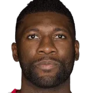

Biggest teammate swings
How much a player's teams' win % dropped in the games his teammate missed, pair by pair, regular season since 1946-47.
121 pairs qualify.
- 1Alvin Williams without Vince Carter35.5 points lower
 Toronto 1998-99 to 2003-04 · Together 170–164 (50.9%) · Without Carter 8–44 (15.4%)Together 50.9%, without Carter 15.4% · Compare
Toronto 1998-99 to 2003-04 · Together 170–164 (50.9%) · Without Carter 8–44 (15.4%)Together 50.9%, without Carter 15.4% · Compare - 2John Paxson without Michael Jordan35.3 points lower
 Chicago 1985-86 to 1992-93 · Together 362–190 (65.6%) · Without Jordan 20–46 (30.3%)Together 65.6%, without Jordan 30.3% · Compare
Chicago 1985-86 to 1992-93 · Together 362–190 (65.6%) · Without Jordan 20–46 (30.3%)Together 65.6%, without Jordan 30.3% · Compare - 3
 Damion Lee without Stephen Curry35.1 points lower
Damion Lee without Stephen Curry35.1 points lower Golden State 2018-19 to 2021-22 · Together 76–48 (61.3%) · Without Curry 17–48 (26.2%)Together 61.3%, without Curry 26.2% · Compare
Golden State 2018-19 to 2021-22 · Together 76–48 (61.3%) · Without Curry 17–48 (26.2%)Together 61.3%, without Curry 26.2% · Compare - 4Sam Pellom without Dan Roundfield34.3 points lower
 Atlanta 1979-80 to 1982-83 · Together 85–66 (56.3%) · Without Roundfield 9–32 (22.0%)Together 56.3%, without Roundfield 22.0% · Compare
Atlanta 1979-80 to 1982-83 · Together 85–66 (56.3%) · Without Roundfield 9–32 (22.0%)Together 56.3%, without Roundfield 22.0% · Compare - 5Bob Gross without Bill Walton34.1 points lower
 Portland 1975-76 to 1977-78;
Portland 1975-76 to 1977-78;  San Diego 1982-83 · Together 120–58 (67.4%) · Without Walton 16–32 (33.3%)Together 67.4%, without Walton 33.3% · Compare
San Diego 1982-83 · Together 120–58 (67.4%) · Without Walton 16–32 (33.3%)Together 67.4%, without Walton 33.3% · Compare - 6Morris Peterson without Vince Carter33.8 points lowerToronto 2000-01 to 2004-05 · Together 119–131 (47.6%) · Without Carter 8–50 (13.8%)Together 47.6%, without Carter 13.8% · Compare
- 7
 Draymond Green without Stephen Curry33.4 points lowerGolden State 2012-13 to 2026-27 · Together 564–240 (70.1%) · Without Curry 50–86 (36.8%)Together 70.1%, without Curry 36.8% · Compare
Draymond Green without Stephen Curry33.4 points lowerGolden State 2012-13 to 2026-27 · Together 564–240 (70.1%) · Without Curry 50–86 (36.8%)Together 70.1%, without Curry 36.8% · Compare - 8
 Andre Iguodala without Stephen Curry31.3 points lowerGolden State 2013-14 to 2018-19, 2021-22 to 2022-23 · Together 321–80 (80.0%) · Without Curry 20–21 (48.8%)Together 80.0%, without Curry 48.8% · Compare
Andre Iguodala without Stephen Curry31.3 points lowerGolden State 2013-14 to 2018-19, 2021-22 to 2022-23 · Together 321–80 (80.0%) · Without Curry 20–21 (48.8%)Together 80.0%, without Curry 48.8% · Compare - 9Horace Grant without Anfernee Hardaway30.8 points lower
 Orlando 1994-95 to 1998-99 · Together 168–74 (69.4%) · Without Hardaway 22–35 (38.6%)Together 69.4%, without Hardaway 38.6% · Compare
Orlando 1994-95 to 1998-99 · Together 168–74 (69.4%) · Without Hardaway 22–35 (38.6%)Together 69.4%, without Hardaway 38.6% · Compare - 10Lionel Hollins without Bill Walton30.3 points lowerPortland 1975-76 to 1977-78; San Diego 1982-83 · Together 122–64 (65.6%) · Without Walton 24–44 (35.3%)Together 65.6%, without Walton 35.3% · Compare
- 11
 Tayshaun Prince without Ben Wallace30.0 points lower
Tayshaun Prince without Ben Wallace30.0 points lower Detroit 2002-03 to 2005-06, 2009-10 to 2011-12 · Together 247–177 (58.3%) · Without Wallace 13–33 (28.3%)Together 58.3%, without Wallace 28.3% · Compare
Detroit 2002-03 to 2005-06, 2009-10 to 2011-12 · Together 247–177 (58.3%) · Without Wallace 13–33 (28.3%)Together 58.3%, without Wallace 28.3% · Compare - 12
 Zeke Nnaji without Nikola Jokic29.1 points lower
Zeke Nnaji without Nikola Jokic29.1 points lower Denver 2020-21 to 2026-27 · Together 184–74 (71.3%) · Without Jokic 19–26 (42.2%)Together 71.3%, without Jokic 42.2% · Compare
Denver 2020-21 to 2026-27 · Together 184–74 (71.3%) · Without Jokic 19–26 (42.2%)Together 71.3%, without Jokic 42.2% · Compare - 12
 Gordan Giricek without Andrei Kirilenko29.1 points lower
Gordan Giricek without Andrei Kirilenko29.1 points lower Utah 2003-04 to 2007-08 · Together 93–79 (54.1%) · Without Kirilenko 10–30 (25.0%)Together 54.1%, without Kirilenko 25.0% · Compare
Utah 2003-04 to 2007-08 · Together 93–79 (54.1%) · Without Kirilenko 10–30 (25.0%)Together 54.1%, without Kirilenko 25.0% · Compare - 14Tom McMillen without Dan Roundfield28.7 points lowerAtlanta 1978-79 to 1982-83;
 Washington 1985-86 · Together 189–166 (53.2%) · Without Roundfield 12–37 (24.5%)Together 53.2%, without Roundfield 24.5% · Compare
Washington 1985-86 · Together 189–166 (53.2%) · Without Roundfield 12–37 (24.5%)Together 53.2%, without Roundfield 24.5% · Compare - 14
 Luther Head without Tracy McGrady28.7 points lower
Luther Head without Tracy McGrady28.7 points lower Houston 2005-06 to 2008-09 · Together 119–65 (64.7%) · Without McGrady 18–32 (36.0%)Together 64.7%, without McGrady 36.0% · Compare
Houston 2005-06 to 2008-09 · Together 119–65 (64.7%) · Without McGrady 18–32 (36.0%)Together 64.7%, without McGrady 36.0% · Compare - 14
 Matthew Dellavedova without Kevin Love28.7 points lower
Matthew Dellavedova without Kevin Love28.7 points lower Cleveland 2014-15 to 2015-16, 2018-19 to 2020-21 · Together 115–87 (56.9%) · Without Love 13–33 (28.3%)Together 56.9%, without Love 28.3% · Compare
Cleveland 2014-15 to 2015-16, 2018-19 to 2020-21 · Together 115–87 (56.9%) · Without Love 13–33 (28.3%)Together 56.9%, without Love 28.3% · Compare - 14
 Jordan Poole without Stephen Curry28.7 points lowerGolden State 2019-20 to 2022-23 · Together 98–65 (60.1%) · Without Curry 28–61 (31.5%)Together 60.1%, without Curry 31.5% · Compare
Jordan Poole without Stephen Curry28.7 points lowerGolden State 2019-20 to 2022-23 · Together 98–65 (60.1%) · Without Curry 28–61 (31.5%)Together 60.1%, without Curry 31.5% · Compare - 18
 Kyle Kuzma without LeBron James28.5 points lower
Kyle Kuzma without LeBron James28.5 points lower LA Lakers 2018-19 to 2020-21 · Together 102–52 (66.2%) · Without James 17–28 (37.8%)Together 66.2%, without James 37.8% · Compare
LA Lakers 2018-19 to 2020-21 · Together 102–52 (66.2%) · Without James 17–28 (37.8%)Together 66.2%, without James 37.8% · Compare - 19Fast Eddie Johnson without Dan Roundfield28.0 points lowerAtlanta 1978-79 to 1983-84 · Together 209–168 (55.4%) · Without Roundfield 14–37 (27.5%)Together 55.4%, without Roundfield 27.5% · Compare
- 20
 Ben McLemore without DeMarcus Cousins27.6 points lower
Ben McLemore without DeMarcus Cousins27.6 points lower Sacramento 2013-14 to 2016-17; Houston 2020-21 · Together 103–141 (42.2%) · Without Cousins 6–35 (14.6%)Together 42.2%, without Cousins 14.6% · Compare
Sacramento 2013-14 to 2016-17; Houston 2020-21 · Together 103–141 (42.2%) · Without Cousins 6–35 (14.6%)Together 42.2%, without Cousins 14.6% · Compare - 21
 Darrell Armstrong without Anfernee Hardaway27.5 points lowerOrlando 1994-95 to 1998-99 · Together 82–45 (64.6%) · Without Hardaway 20–34 (37.0%)Together 64.6%, without Hardaway 37.0% · Compare
Darrell Armstrong without Anfernee Hardaway27.5 points lowerOrlando 1994-95 to 1998-99 · Together 82–45 (64.6%) · Without Hardaway 20–34 (37.0%)Together 64.6%, without Hardaway 37.0% · Compare - 21
 Paul Reed without Joel Embiid27.5 points lower
Paul Reed without Joel Embiid27.5 points lower Philadelphia 2020-21 to 2023-24 · Together 94–43 (68.6%) · Without Embiid 30–43 (41.1%)Together 68.6%, without Embiid 41.1% · Compare
Philadelphia 2020-21 to 2023-24 · Together 94–43 (68.6%) · Without Embiid 30–43 (41.1%)Together 68.6%, without Embiid 41.1% · Compare - 23
 Furkan Korkmaz without Joel Embiid26.7 points lowerPhiladelphia 2017-18 to 2023-24 · Together 170–73 (70.0%) · Without Embiid 32–42 (43.2%)Together 70.0%, without Embiid 43.2% · Compare
Furkan Korkmaz without Joel Embiid26.7 points lowerPhiladelphia 2017-18 to 2023-24 · Together 170–73 (70.0%) · Without Embiid 32–42 (43.2%)Together 70.0%, without Embiid 43.2% · Compare - 24
 Cory Joseph without Kawhi Leonard26.6 points lower
Cory Joseph without Kawhi Leonard26.6 points lower San Antonio 2011-12 to 2014-15 · Together 121–37 (76.6%) · Without Leonard 22–22 (50.0%)Together 76.6%, without Leonard 50.0% · Compare
San Antonio 2011-12 to 2014-15 · Together 121–37 (76.6%) · Without Leonard 22–22 (50.0%)Together 76.6%, without Leonard 50.0% · Compare - 25
 Ben Wallace without Richard Hamilton26.4 points lowerDetroit 2002-03 to 2005-06, 2009-10 to 2010-11 · Together 234–135 (63.4%) · Without Hamilton 20–34 (37.0%)Together 63.4%, without Hamilton 37.0% · Compare
Ben Wallace without Richard Hamilton26.4 points lowerDetroit 2002-03 to 2005-06, 2009-10 to 2010-11 · Together 234–135 (63.4%) · Without Hamilton 20–34 (37.0%)Together 63.4%, without Hamilton 37.0% · Compare - 26
 Mike Dunleavy without Jimmy Butler26.3 points lowerChicago 2013-14 to 2015-16 · Together 85–47 (64.4%) · Without Butler 16–26 (38.1%)Together 64.4%, without Butler 38.1% · Compare
Mike Dunleavy without Jimmy Butler26.3 points lowerChicago 2013-14 to 2015-16 · Together 85–47 (64.4%) · Without Butler 16–26 (38.1%)Together 64.4%, without Butler 38.1% · Compare - 26Tree Rollins without Dan Roundfield26.3 points lowerAtlanta 1978-79 to 1983-84 · Together 221–177 (55.5%) · Without Roundfield 12–29 (29.3%)Together 55.5%, without Roundfield 29.3% · Compare
- 28
 Gary Payton without Shaquille O'Neal26.1 points lowerLA Lakers 2003-04;
Gary Payton without Shaquille O'Neal26.1 points lowerLA Lakers 2003-04;  Miami 2005-06 to 2006-07 · Together 113–48 (70.2%) · Without O'Neal 30–38 (44.1%)Together 70.2%, without O'Neal 44.1% · Compare
Miami 2005-06 to 2006-07 · Together 113–48 (70.2%) · Without O'Neal 30–38 (44.1%)Together 70.2%, without O'Neal 44.1% · Compare - 28
 Gui Santos without Stephen Curry26.1 points lowerGolden State 2023-24 to 2026-27 · Together 68–39 (63.6%) · Without Curry 18–30 (37.5%)Together 63.6%, without Curry 37.5% · Compare
Gui Santos without Stephen Curry26.1 points lowerGolden State 2023-24 to 2026-27 · Together 68–39 (63.6%) · Without Curry 18–30 (37.5%)Together 63.6%, without Curry 37.5% · Compare - 30
 John Havlicek without Dave Cowens26.0 points lower
John Havlicek without Dave Cowens26.0 points lower Boston 1970-71 to 1977-78 · Together 378–199 (65.5%) · Without Cowens 17–26 (39.5%)Together 65.5%, without Cowens 39.5% · Compare
Boston 1970-71 to 1977-78 · Together 378–199 (65.5%) · Without Cowens 17–26 (39.5%)Together 65.5%, without Cowens 39.5% · Compare - 30
 Kevin McHale without Larry Bird26.0 points lowerBoston 1980-81 to 1991-92 · Together 555–200 (73.5%) · Without Bird 29–32 (47.5%)Together 73.5%, without Bird 47.5% · Compare
Kevin McHale without Larry Bird26.0 points lowerBoston 1980-81 to 1991-92 · Together 555–200 (73.5%) · Without Bird 29–32 (47.5%)Together 73.5%, without Bird 47.5% · Compare - 32Ed Pinckney without Larry Bird25.5 points lowerBoston 1989-90 to 1991-92 · Together 112–50 (69.1%) · Without Bird 24–31 (43.6%)Together 69.1%, without Bird 43.6% · Compare
- 32
 Ben Simmons without Joel Embiid25.5 points lowerPhiladelphia 2017-18 to 2020-21 · Together 144–63 (69.6%) · Without Embiid 26–33 (44.1%)Together 69.6%, without Embiid 44.1% · Compare
Ben Simmons without Joel Embiid25.5 points lowerPhiladelphia 2017-18 to 2020-21 · Together 144–63 (69.6%) · Without Embiid 26–33 (44.1%)Together 69.6%, without Embiid 44.1% · Compare - 34
 Dirk Nowitzki without Steve Nash25.4 points lower
Dirk Nowitzki without Steve Nash25.4 points lower Dallas 1998-99 to 2003-04 · Together 249–143 (63.5%) · Without Nash 16–26 (38.1%)Together 63.5%, without Nash 38.1% · Compare
Dallas 1998-99 to 2003-04 · Together 249–143 (63.5%) · Without Nash 16–26 (38.1%)Together 63.5%, without Nash 38.1% · Compare - 34Kenny Smith without Hakeem Olajuwon25.4 points lowerHouston 1990-91 to 1995-96 · Together 266–143 (65.0%) · Without Olajuwon 23–35 (39.7%)Together 65.0%, without Olajuwon 39.7% · Compare
- 34Joe Kleine without Larry Bird25.4 points lowerBoston 1989-90 to 1991-92 · Together 111–48 (69.8%) · Without Bird 24–30 (44.4%)Together 69.8%, without Bird 44.4% · Compare
- 37
 Thanasis Antetokounmpo without Giannis Antetokounmpo25.2 points lower
Thanasis Antetokounmpo without Giannis Antetokounmpo25.2 points lower Milwaukee 2019-20 to 2023-24, 2025-26 · Together 111–55 (66.9%) · Without Giannis Antetokounmpo 20–28 (41.7%)Together 66.9%, without Giannis Antetokounmpo 41.7% · Compare
Milwaukee 2019-20 to 2023-24, 2025-26 · Together 111–55 (66.9%) · Without Giannis Antetokounmpo 20–28 (41.7%)Together 66.9%, without Giannis Antetokounmpo 41.7% · Compare - 38Kevin Gamble without Larry Bird25.0 points lowerBoston 1989-90 to 1991-92 · Together 116–53 (68.6%) · Without Bird 24–31 (43.6%)Together 68.6%, without Bird 43.6% · Compare
- 39
 Tyrese Maxey without Joel Embiid24.9 points lowerPhiladelphia 2020-21 to 2026-27 · Together 174–80 (68.5%) · Without Embiid 58–75 (43.6%)Together 68.5%, without Embiid 43.6% · Compare
Tyrese Maxey without Joel Embiid24.9 points lowerPhiladelphia 2020-21 to 2026-27 · Together 174–80 (68.5%) · Without Embiid 58–75 (43.6%)Together 68.5%, without Embiid 43.6% · Compare - 40Devean George without Shaquille O'Neal24.5 points lowerLA Lakers 1999-00 to 2003-04 · Together 219–75 (74.5%) · Without O'Neal 21–21 (50.0%)Together 74.5%, without O'Neal 50.0% · Compare
- 41
 Kobe Bryant without Metta World Peace24.1 points lowerLA Lakers 2009-10 to 2012-13, 2015-16 · Together 181–123 (59.5%) · Without Peace 17–31 (35.4%)Together 59.5%, without Peace 35.4% · Compare
Kobe Bryant without Metta World Peace24.1 points lowerLA Lakers 2009-10 to 2012-13, 2015-16 · Together 181–123 (59.5%) · Without Peace 17–31 (35.4%)Together 59.5%, without Peace 35.4% · Compare - 42Bobby Phills without Mark Price24.0 points lowerCleveland 1991-92 to 1994-95 · Together 101–50 (66.9%) · Without Price 18–24 (42.9%)Together 66.9%, without Price 42.9% · Compare
- 42
 Channing Frye without Kevin Love24.0 points lowerCleveland 2015-16 to 2018-19 · Together 71–46 (60.7%) · Without Love 22–38 (36.7%)Together 60.7%, without Love 36.7% · Compare
Channing Frye without Kevin Love24.0 points lowerCleveland 2015-16 to 2018-19 · Together 71–46 (60.7%) · Without Love 22–38 (36.7%)Together 60.7%, without Love 36.7% · Compare - 42
 Shawn Bradley without Steve Nash24.0 points lowerDallas 1998-99 to 2003-04 · Together 221–135 (62.1%) · Without Nash 16–26 (38.1%)Together 62.1%, without Nash 38.1% · Compare
Shawn Bradley without Steve Nash24.0 points lowerDallas 1998-99 to 2003-04 · Together 221–135 (62.1%) · Without Nash 16–26 (38.1%)Together 62.1%, without Nash 38.1% · Compare - 45Dave Corzine without Michael Jordan23.8 points lowerChicago 1984-85 to 1988-89 · Together 182–154 (54.2%) · Without Jordan 17–39 (30.4%)Together 54.2%, without Jordan 30.4% · Compare
- 46
 PJ Brown without Jamaal Magloire23.7 points lower
PJ Brown without Jamaal Magloire23.7 points lower Charlotte 2000-01 to 2001-02;
Charlotte 2000-01 to 2001-02;  New Orleans 2002-03 to 2004-05 · Together 175–158 (52.6%) · Without Magloire 17–42 (28.8%)Together 52.6%, without Magloire 28.8% · Compare
New Orleans 2002-03 to 2004-05 · Together 175–158 (52.6%) · Without Magloire 17–42 (28.8%)Together 52.6%, without Magloire 28.8% · Compare - 46Reggie Lewis without Larry Bird23.7 points lowerBoston 1987-88 to 1991-92 · Together 156–69 (69.3%) · Without Bird 26–31 (45.6%)Together 69.3%, without Bird 45.6% · Compare
- 48
 Luc Mbah a Moute without Chris Paul23.6 points lower
Luc Mbah a Moute without Chris Paul23.6 points lower LA Clippers 2015-16 to 2016-17; Houston 2017-18 · Together 127–43 (74.7%) · Without Paul 23–22 (51.1%)Together 74.7%, without Paul 51.1% · Compare
LA Clippers 2015-16 to 2016-17; Houston 2017-18 · Together 127–43 (74.7%) · Without Paul 23–22 (51.1%)Together 74.7%, without Paul 51.1% · Compare - 48
 Rodney Hood without Rudy Gobert23.6 points lowerUtah 2014-15 to 2017-18 · Together 107–76 (58.5%) · Without Gobert 15–28 (34.9%)Together 58.5%, without Gobert 34.9% · Compare
Rodney Hood without Rudy Gobert23.6 points lowerUtah 2014-15 to 2017-18 · Together 107–76 (58.5%) · Without Gobert 15–28 (34.9%)Together 58.5%, without Gobert 34.9% · Compare - 50
 Shake Milton without Joel Embiid23.4 points lowerPhiladelphia 2018-19 to 2022-23 · Together 133–57 (70.0%) · Without Embiid 27–31 (46.6%)Together 70.0%, without Embiid 46.6% · Compare
Shake Milton without Joel Embiid23.4 points lowerPhiladelphia 2018-19 to 2022-23 · Together 133–57 (70.0%) · Without Embiid 27–31 (46.6%)Together 70.0%, without Embiid 46.6% · Compare - 51
 Tobias Harris without Joel Embiid23.2 points lowerPhiladelphia 2018-19 to 2023-24 · Together 185–83 (69.0%) · Without Embiid 49–58 (45.8%)Together 69.0%, without Embiid 45.8% · Compare
Tobias Harris without Joel Embiid23.2 points lowerPhiladelphia 2018-19 to 2023-24 · Together 185–83 (69.0%) · Without Embiid 49–58 (45.8%)Together 69.0%, without Embiid 45.8% · Compare - 52
 Darius Garland without Evan Mobley23.1 points lowerCleveland 2021-22 to 2025-26 · Together 164–90 (64.6%) · Without Mobley 17–24 (41.5%)Together 64.6%, without Mobley 41.5% · Compare
Darius Garland without Evan Mobley23.1 points lowerCleveland 2021-22 to 2025-26 · Together 164–90 (64.6%) · Without Mobley 17–24 (41.5%)Together 64.6%, without Mobley 41.5% · Compare - 53
 Mario Elie without Hakeem Olajuwon23.0 points lowerHouston 1993-94 to 1997-98 · Together 194–102 (65.5%) · Without Olajuwon 20–27 (42.6%)Together 65.5%, without Olajuwon 42.6% · Compare
Mario Elie without Hakeem Olajuwon23.0 points lowerHouston 1993-94 to 1997-98 · Together 194–102 (65.5%) · Without Olajuwon 20–27 (42.6%)Together 65.5%, without Olajuwon 42.6% · Compare - 54
 Matt Bonner without Kawhi Leonard22.6 points lowerSan Antonio 2011-12 to 2015-16 · Together 176–54 (76.5%) · Without Leonard 34–29 (54.0%)Together 76.5%, without Leonard 54.0% · Compare
Matt Bonner without Kawhi Leonard22.6 points lowerSan Antonio 2011-12 to 2015-16 · Together 176–54 (76.5%) · Without Leonard 34–29 (54.0%)Together 76.5%, without Leonard 54.0% · Compare - 54
 Max Christie without Anthony Davis22.6 points lowerLA Lakers 2022-23 to 2024-25; Dallas 2024-25 to 2025-26 · Together 84–65 (56.4%) · Without Davis 23–45 (33.8%)Together 56.4%, without Davis 33.8% · Compare
Max Christie without Anthony Davis22.6 points lowerLA Lakers 2022-23 to 2024-25; Dallas 2024-25 to 2025-26 · Together 84–65 (56.4%) · Without Davis 23–45 (33.8%)Together 56.4%, without Davis 33.8% · Compare - 56
 Moses Malone without Doc Rivers22.2 points lowerAtlanta 1988-89 to 1990-91; San Antonio 1994-95 · Together 120–82 (59.4%) · Without Rivers 16–27 (37.2%)Together 59.4%, without Rivers 37.2% · Compare
Moses Malone without Doc Rivers22.2 points lowerAtlanta 1988-89 to 1990-91; San Antonio 1994-95 · Together 120–82 (59.4%) · Without Rivers 16–27 (37.2%)Together 59.4%, without Rivers 37.2% · Compare - 56
 Charles Oakley without Michael Jordan22.2 points lowerChicago 1985-86 to 1987-88;
Charles Oakley without Michael Jordan22.2 points lowerChicago 1985-86 to 1987-88;  Washington 2002-03 · Together 118–106 (52.7%) · Without Jordan 18–41 (30.5%)Together 52.7%, without Jordan 30.5% · Compare
Washington 2002-03 · Together 118–106 (52.7%) · Without Jordan 18–41 (30.5%)Together 52.7%, without Jordan 30.5% · Compare - 58
 Terrell Brandon without Mark Price22.1 points lowerCleveland 1991-92 to 1994-95 · Together 169–85 (66.5%) · Without Price 20–25 (44.4%)Together 66.5%, without Price 44.4% · Compare
Terrell Brandon without Mark Price22.1 points lowerCleveland 1991-92 to 1994-95 · Together 169–85 (66.5%) · Without Price 20–25 (44.4%)Together 66.5%, without Price 44.4% · Compare - 58
 Robert Parish without Larry Bird22.1 points lowerBoston 1980-81 to 1991-92 · Together 584–205 (74.0%) · Without Bird 40–37 (51.9%)Together 74.0%, without Bird 51.9% · Compare
Robert Parish without Larry Bird22.1 points lowerBoston 1980-81 to 1991-92 · Together 584–205 (74.0%) · Without Bird 40–37 (51.9%)Together 74.0%, without Bird 51.9% · Compare - 60
 Kevon Looney without Stephen Curry21.9 points lowerGolden State 2015-16 to 2024-25 · Together 315–153 (67.3%) · Without Curry 49–59 (45.4%)Together 67.3%, without Curry 45.4% · Compare
Kevon Looney without Stephen Curry21.9 points lowerGolden State 2015-16 to 2024-25 · Together 315–153 (67.3%) · Without Curry 49–59 (45.4%)Together 67.3%, without Curry 45.4% · Compare - 60
 Luguentz Dort without Shai Gilgeous-Alexander21.9 points lower
Luguentz Dort without Shai Gilgeous-Alexander21.9 points lower Oklahoma City 2019-20 to 2025-26 · Together 238–128 (65.0%) · Without Gilgeous-Alexander 22–29 (43.1%)Together 65.0%, without Gilgeous-Alexander 43.1% · Compare
Oklahoma City 2019-20 to 2025-26 · Together 238–128 (65.0%) · Without Gilgeous-Alexander 22–29 (43.1%)Together 65.0%, without Gilgeous-Alexander 43.1% · Compare - 62
 Wilt Chamberlain without Jerry West21.8 points lowerLA Lakers 1968-69 to 1972-73 · Together 214–74 (74.3%) · Without West 21–19 (52.5%)Together 74.3%, without West 52.5% · Compare
Wilt Chamberlain without Jerry West21.8 points lowerLA Lakers 1968-69 to 1972-73 · Together 214–74 (74.3%) · Without West 21–19 (52.5%)Together 74.3%, without West 52.5% · Compare - 63
 Klay Thompson without Stephen Curry21.6 points lowerGolden State 2011-12 to 2018-19, 2021-22 to 2023-24 · Together 473–193 (71.0%) · Without Curry 40–41 (49.4%)Together 71.0%, without Curry 49.4% · Compare
Klay Thompson without Stephen Curry21.6 points lowerGolden State 2011-12 to 2018-19, 2021-22 to 2023-24 · Together 473–193 (71.0%) · Without Curry 40–41 (49.4%)Together 71.0%, without Curry 49.4% · Compare - 63
 Amir Coffey without Paul George21.6 points lowerLA Clippers 2019-20 to 2023-24 · Together 107–55 (66.0%) · Without George 36–45 (44.4%)Together 66.0%, without George 44.4% · Compare
Amir Coffey without Paul George21.6 points lowerLA Clippers 2019-20 to 2023-24 · Together 107–55 (66.0%) · Without George 36–45 (44.4%)Together 66.0%, without George 44.4% · Compare - 65Larry Steele without Bill Walton21.5 points lowerPortland 1974-75 to 1977-78 · Together 120–77 (60.9%) · Without Walton 26–40 (39.4%)Together 60.9%, without Walton 39.4% · Compare
- 65Kentavious Caldwell-Pope without LeBron James21.5 points lowerLA Lakers 2018-19 to 2020-21; Philadelphia 2026-27 · Together 114–61 (65.1%) · Without James 24–31 (43.6%)Together 65.1%, without James 43.6% · Compare
- 65
 Deandre Ayton without Devin Booker21.5 points lower
Deandre Ayton without Devin Booker21.5 points lower Phoenix 2018-19 to 2022-23 · Together 148–104 (58.7%) · Without Booker 19–32 (37.3%)Together 58.7%, without Booker 37.3% · Compare
Phoenix 2018-19 to 2022-23 · Together 148–104 (58.7%) · Without Booker 19–32 (37.3%)Together 58.7%, without Booker 37.3% · Compare - 68
 Jarred Vanderbilt without D'Angelo Russell21.4 points lower
Jarred Vanderbilt without D'Angelo Russell21.4 points lower Minnesota 2019-20 to 2021-22; LA Lakers 2022-23 to 2023-24 · Together 73–65 (52.9%) · Without Russell 17–37 (31.5%)Together 52.9%, without Russell 31.5% · Compare
Minnesota 2019-20 to 2021-22; LA Lakers 2022-23 to 2023-24 · Together 73–65 (52.9%) · Without Russell 17–37 (31.5%)Together 52.9%, without Russell 31.5% · Compare - 68Matt Harpring without Andrei Kirilenko21.4 points lowerUtah 2002-03 to 2008-09 · Together 224–165 (57.6%) · Without Kirilenko 25–44 (36.2%)Together 57.6%, without Kirilenko 36.2% · Compare
- 70Maurice Lucas without Lionel Hollins21.3 points lowerPortland 1976-77 to 1979-80 · Together 130–82 (61.3%) · Without Hollins 18–27 (40.0%)Together 61.3%, without Hollins 40.0% · Compare
- 71Byron Scott without Magic Johnson21.2 points lowerLA Lakers 1983-84 to 1990-91 · Together 436–141 (75.6%) · Without Johnson 25–21 (54.3%)Together 75.6%, without Johnson 54.3% · Compare
- 71
 Gary Payton II without Stephen Curry21.2 points lowerGolden State 2020-21 to 2026-27 · Together 133–78 (63.0%) · Without Curry 23–32 (41.8%)Together 63.0%, without Curry 41.8% · Compare
Gary Payton II without Stephen Curry21.2 points lowerGolden State 2020-21 to 2026-27 · Together 133–78 (63.0%) · Without Curry 23–32 (41.8%)Together 63.0%, without Curry 41.8% · Compare - 71
 Rafer Alston without Tracy McGrady21.2 points lowerHouston 2005-06 to 2008-09 · Together 127–64 (66.5%) · Without McGrady 24–29 (45.3%)Together 66.5%, without McGrady 45.3% · Compare
Rafer Alston without Tracy McGrady21.2 points lowerHouston 2005-06 to 2008-09 · Together 127–64 (66.5%) · Without McGrady 24–29 (45.3%)Together 66.5%, without McGrady 45.3% · Compare - 71
 Joe Ingles without Rudy Gobert21.2 points lowerUtah 2014-15 to 2021-22; Minnesota 2024-25 to 2025-26 · Together 344–228 (60.1%) · Without Gobert 23–36 (39.0%)Together 60.1%, without Gobert 39.0% · Compare
Joe Ingles without Rudy Gobert21.2 points lowerUtah 2014-15 to 2021-22; Minnesota 2024-25 to 2025-26 · Together 344–228 (60.1%) · Without Gobert 23–36 (39.0%)Together 60.1%, without Gobert 39.0% · Compare - 75
 Nicolas Batum without Kawhi Leonard21.1 points lowerLA Clippers 2020-21, 2022-23 to 2025-26 · Together 126–69 (64.6%) · Without Leonard 30–39 (43.5%)Together 64.6%, without Leonard 43.5% · Compare
Nicolas Batum without Kawhi Leonard21.1 points lowerLA Clippers 2020-21, 2022-23 to 2025-26 · Together 126–69 (64.6%) · Without Leonard 30–39 (43.5%)Together 64.6%, without Leonard 43.5% · Compare - 76James Worthy without Magic Johnson21.0 points lowerLA Lakers 1982-83 to 1990-91 · Together 493–164 (75.0%) · Without Johnson 27–23 (54.0%)Together 75.0%, without Johnson 54.0% · Compare
- 76
 Udonis Haslem without Shaquille O'Neal21.0 points lowerMiami 2004-05 to 2007-08 · Together 128–73 (63.7%) · Without O'Neal 32–43 (42.7%)Together 63.7%, without O'Neal 42.7% · Compare
Udonis Haslem without Shaquille O'Neal21.0 points lowerMiami 2004-05 to 2007-08 · Together 128–73 (63.7%) · Without O'Neal 32–43 (42.7%)Together 63.7%, without O'Neal 42.7% · Compare - 76
 Tristan Thompson without Kyrie Irving21.0 points lowerCleveland 2011-12 to 2016-17 · Together 197–176 (52.8%) · Without Irving 21–45 (31.8%)Together 52.8%, without Irving 31.8% · Compare
Tristan Thompson without Kyrie Irving21.0 points lowerCleveland 2011-12 to 2016-17 · Together 197–176 (52.8%) · Without Irving 21–45 (31.8%)Together 52.8%, without Irving 31.8% · Compare - 79Keith Erickson without Jerry West20.8 points lowerLA Lakers 1968-69 to 1972-73 · Together 182–75 (70.8%) · Without West 21–21 (50.0%)Together 70.8%, without West 50.0% · Compare
- 79Bob Love without Jerry Sloan20.8 points lowerChicago 1968-69 to 1975-76 · Together 279–189 (59.6%) · Without Sloan 26–41 (38.8%)Together 59.6%, without Sloan 38.8% · Compare
- 79
 Boris Diaw without Kawhi Leonard20.8 points lowerSan Antonio 2011-12 to 2015-16 · Together 213–54 (79.8%) · Without Leonard 36–25 (59.0%)Together 79.8%, without Leonard 59.0% · Compare
Boris Diaw without Kawhi Leonard20.8 points lowerSan Antonio 2011-12 to 2015-16 · Together 213–54 (79.8%) · Without Leonard 36–25 (59.0%)Together 79.8%, without Leonard 59.0% · Compare - 82Michael Finley without Steve Nash20.7 points lowerPhoenix 1996-97; Dallas 1998-99 to 2003-04 · Together 241–151 (61.5%) · Without Nash 20–29 (40.8%)Together 61.5%, without Nash 40.8% · Compare
- 83
 AJ Green without Giannis Antetokounmpo20.6 points lowerMilwaukee 2022-23 to 2025-26 · Together 106–61 (63.5%) · Without Antetokounmpo 24–32 (42.9%)Together 63.5%, without Antetokounmpo 42.9% · Compare
AJ Green without Giannis Antetokounmpo20.6 points lowerMilwaukee 2022-23 to 2025-26 · Together 106–61 (63.5%) · Without Antetokounmpo 24–32 (42.9%)Together 63.5%, without Antetokounmpo 42.9% · Compare - 83
 Tim Hardaway Jr without Luka Doncic20.6 points lowerDallas 2018-19 to 2023-24 · Together 176–120 (59.5%) · Without Doncic 21–33 (38.9%)Together 59.5%, without Doncic 38.9% · Compare
Tim Hardaway Jr without Luka Doncic20.6 points lowerDallas 2018-19 to 2023-24 · Together 176–120 (59.5%) · Without Doncic 21–33 (38.9%)Together 59.5%, without Doncic 38.9% · Compare - 83
 Kenrich Williams without Shai Gilgeous-Alexander20.6 points lowerOklahoma City 2020-21 to 2026-27 · Together 195–107 (64.6%) · Without Gilgeous-Alexander 22–28 (44.0%)Together 64.6%, without Gilgeous-Alexander 44.0% · Compare
Kenrich Williams without Shai Gilgeous-Alexander20.6 points lowerOklahoma City 2020-21 to 2026-27 · Together 195–107 (64.6%) · Without Gilgeous-Alexander 22–28 (44.0%)Together 64.6%, without Gilgeous-Alexander 44.0% · Compare - 86
 Miles Bridges without LaMelo Ball20.5 points lower
Miles Bridges without LaMelo Ball20.5 points lower Charlotte 2020-21 to 2021-22, 2023-24 to 2025-26 · Together 115–122 (48.5%) · Without Ball 21–54 (28.0%)Together 48.5%, without Ball 28.0% · Compare
Charlotte 2020-21 to 2021-22, 2023-24 to 2025-26 · Together 115–122 (48.5%) · Without Ball 21–54 (28.0%)Together 48.5%, without Ball 28.0% · Compare - 87Amir Coffey without Kawhi Leonard20.4 points lowerLA Clippers 2019-20 to 2020-21, 2022-23 to 2024-25 · Together 105–50 (67.7%) · Without Leonard 27–30 (47.4%)Together 67.7%, without Leonard 47.4% · Compare
- 87
 Aaron Wiggins without Shai Gilgeous-Alexander20.4 points lowerOklahoma City 2021-22 to 2025-26 · Together 189–93 (67.0%) · Without Gilgeous-Alexander 21–24 (46.7%)Together 67.0%, without Gilgeous-Alexander 46.7% · Compare
Aaron Wiggins without Shai Gilgeous-Alexander20.4 points lowerOklahoma City 2021-22 to 2025-26 · Together 189–93 (67.0%) · Without Gilgeous-Alexander 21–24 (46.7%)Together 67.0%, without Gilgeous-Alexander 46.7% · Compare - 89
 Yao Ming without Tracy McGrady20.2 points lowerHouston 2004-05 to 2008-09 · Together 146–74 (66.4%) · Without McGrady 24–28 (46.2%)Together 66.4%, without McGrady 46.2% · Compare
Yao Ming without Tracy McGrady20.2 points lowerHouston 2004-05 to 2008-09 · Together 146–74 (66.4%) · Without McGrady 24–28 (46.2%)Together 66.4%, without McGrady 46.2% · Compare - 90
 Brandin Podziemski without Stephen Curry20.1 points lowerGolden State 2023-24 to 2026-27 · Together 101–71 (58.7%) · Without Curry 22–35 (38.6%)Together 58.7%, without Curry 38.6% · Compare
Brandin Podziemski without Stephen Curry20.1 points lowerGolden State 2023-24 to 2026-27 · Together 101–71 (58.7%) · Without Curry 22–35 (38.6%)Together 58.7%, without Curry 38.6% · Compare - 90
 Metta World Peace without Brad Miller20.1 points lowerChicago 2000-01 to 2001-02;
Metta World Peace without Brad Miller20.1 points lowerChicago 2000-01 to 2001-02;  Indiana 2001-02 to 2002-03; Sacramento 2005-06 to 2007-08 · Together 148–161 (47.9%) · Without Miller 15–39 (27.8%)Together 47.9%, without Miller 27.8% · Compare
Indiana 2001-02 to 2002-03; Sacramento 2005-06 to 2007-08 · Together 148–161 (47.9%) · Without Miller 15–39 (27.8%)Together 47.9%, without Miller 27.8% · Compare - 92
 Tiago Splitter without Kawhi Leonard20.0 points lowerSan Antonio 2011-12 to 2014-15 · Together 154–48 (76.2%) · Without Leonard 27–21 (56.2%)Together 76.2%, without Leonard 56.2% · Compare
Tiago Splitter without Kawhi Leonard20.0 points lowerSan Antonio 2011-12 to 2014-15 · Together 154–48 (76.2%) · Without Leonard 27–21 (56.2%)Together 76.2%, without Leonard 56.2% · Compare - 93
 Tim Duncan without Kawhi Leonard19.9 points lowerSan Antonio 2011-12 to 2015-16 · Together 221–62 (78.1%) · Without Leonard 32–23 (58.2%)Together 78.1%, without Leonard 58.2% · Compare
Tim Duncan without Kawhi Leonard19.9 points lowerSan Antonio 2011-12 to 2015-16 · Together 221–62 (78.1%) · Without Leonard 32–23 (58.2%)Together 78.1%, without Leonard 58.2% · Compare - 94
 Wes Unseld without Gus Johnson19.8 points lowerBaltimore 1968-69 to 1971-72 · Together 141–82 (63.2%) · Without Johnson 23–30 (43.4%)Together 63.2%, without Johnson 43.4% · Compare
Wes Unseld without Gus Johnson19.8 points lowerBaltimore 1968-69 to 1971-72 · Together 141–82 (63.2%) · Without Johnson 23–30 (43.4%)Together 63.2%, without Johnson 43.4% · Compare - 94Spud Webb without Doc Rivers19.8 points lowerAtlanta 1985-86 to 1990-91 · Together 224–135 (62.4%) · Without Rivers 23–31 (42.6%)Together 62.4%, without Rivers 42.6% · Compare
- 96Nicolas Batum without Paul George19.5 points lowerLA Clippers 2020-21 to 2023-24 · Together 84–45 (65.1%) · Without George 31–37 (45.6%)Together 65.1%, without George 45.6% · Compare
- 97Derek Fisher without Shaquille O'Neal19.4 points lowerLA Lakers 1996-97 to 2003-04 · Together 327–115 (74.0%) · Without O'Neal 48–40 (54.5%)Together 74.0%, without O'Neal 54.5% · Compare
- 97
 Terance Mann without Kawhi Leonard19.4 points lowerLA Clippers 2019-20 to 2020-21, 2022-23 to 2024-25 · Together 134–68 (66.3%) · Without Leonard 31–35 (47.0%)Together 66.3%, without Leonard 47.0% · Compare
Terance Mann without Kawhi Leonard19.4 points lowerLA Clippers 2019-20 to 2020-21, 2022-23 to 2024-25 · Together 134–68 (66.3%) · Without Leonard 31–35 (47.0%)Together 66.3%, without Leonard 47.0% · Compare - 99
 Derrick Rose without Luol Deng19.3 points lowerChicago 2008-09 to 2011-12, 2013-14; Minnesota 2018-19 · Together 162–92 (63.8%) · Without Deng 24–30 (44.4%)Together 63.8%, without Deng 44.4% · Compare
Derrick Rose without Luol Deng19.3 points lowerChicago 2008-09 to 2011-12, 2013-14; Minnesota 2018-19 · Together 162–92 (63.8%) · Without Deng 24–30 (44.4%)Together 63.8%, without Deng 44.4% · Compare - 100
 Jamal Crawford without Chris Paul19.1 points lowerLA Clippers 2012-13 to 2014-15; LA Clippers 2015-16 to 2016-17 · Together 215–96 (69.1%) · Without Paul 29–29 (50.0%)Together 69.1%, without Paul 50.0% · Compare
Jamal Crawford without Chris Paul19.1 points lowerLA Clippers 2012-13 to 2014-15; LA Clippers 2015-16 to 2016-17 · Together 215–96 (69.1%) · Without Paul 29–29 (50.0%)Together 69.1%, without Paul 50.0% · Compare - 101Arvydas Sabonis without Jermaine O'Neal19.0 points lowerPortland 1996-97 to 1999-00 · Together 125–50 (71.4%) · Without O'Neal 33–30 (52.4%)Together 71.4%, without O'Neal 52.4% · Compare
- 102
 Ivica Zubac without Kawhi Leonard18.8 points lowerLA Clippers 2019-20 to 2020-21, 2022-23 to 2025-26 · Together 183–97 (65.4%) · Without Leonard 41–47 (46.6%)Together 65.4%, without Leonard 46.6% · Compare
Ivica Zubac without Kawhi Leonard18.8 points lowerLA Clippers 2019-20 to 2020-21, 2022-23 to 2025-26 · Together 183–97 (65.4%) · Without Leonard 41–47 (46.6%)Together 65.4%, without Leonard 46.6% · Compare - 103
 Gary Neal without Manu Ginobili18.7 points lowerSan Antonio 2010-11 to 2012-13 · Together 117–34 (77.5%) · Without Ginobili 30–21 (58.8%)Together 77.5%, without Ginobili 58.8% · Compare
Gary Neal without Manu Ginobili18.7 points lowerSan Antonio 2010-11 to 2012-13 · Together 117–34 (77.5%) · Without Ginobili 30–21 (58.8%)Together 77.5%, without Ginobili 58.8% · Compare - 104Rick Fox without Shaquille O'Neal18.6 points lowerLA Lakers 1997-98 to 2003-04 · Together 314–113 (73.5%) · Without O'Neal 28–23 (54.9%)Together 73.5%, without O'Neal 54.9% · Compare
- 105
 Mikal Bridges without Devin Booker18.2 points lowerPhoenix 2018-19 to 2022-23 · Together 172–127 (57.5%) · Without Booker 24–37 (39.3%)Together 57.5%, without Booker 39.3% · Compare
Mikal Bridges without Devin Booker18.2 points lowerPhoenix 2018-19 to 2022-23 · Together 172–127 (57.5%) · Without Booker 24–37 (39.3%)Together 57.5%, without Booker 39.3% · Compare - 106Terance Mann without Paul George18.1 points lowerLA Clippers 2019-20 to 2023-24 · Together 146–80 (64.6%) · Without George 46–53 (46.5%)Together 64.6%, without George 46.5% · Compare
- 107Robert Horry without Shaquille O'Neal17.7 points lowerLA Lakers 1996-97 to 2002-03 · Together 276–99 (73.6%) · Without O'Neal 33–26 (55.9%)Together 73.6%, without O'Neal 55.9% · Compare
- 108Tristan Thompson without Kevin Love17.6 points lowerCleveland 2014-15 to 2019-20 · Together 178–126 (58.6%) · Without Love 36–52 (40.9%)Together 58.6%, without Love 40.9% · Compare
- 109
 DeAndre Jordan without Chris Paul17.1 points lowerLA Clippers 2011-12 to 2014-15; LA Clippers 2015-16 to 2016-17 · Together 279–127 (68.7%) · Without Paul 32–30 (51.6%)Together 68.7%, without Paul 51.6% · Compare
DeAndre Jordan without Chris Paul17.1 points lowerLA Clippers 2011-12 to 2014-15; LA Clippers 2015-16 to 2016-17 · Together 279–127 (68.7%) · Without Paul 32–30 (51.6%)Together 68.7%, without Paul 51.6% · Compare - 110Ivica Zubac without Paul George16.7 points lowerLA Clippers 2019-20 to 2023-24 · Together 162–87 (65.1%) · Without George 44–47 (48.4%)Together 65.1%, without George 48.4% · Compare
- 111Bobby Portis without Giannis Antetokounmpo16.6 points lowerMilwaukee 2020-21 to 2025-26; Miami 2026-27 · Together 211–121 (63.6%) · Without Antetokounmpo 38–43 (46.9%)Together 63.6%, without Antetokounmpo 46.9% · Compare
- 111Hot Rod Williams without Mark Price16.6 points lowerCleveland 1986-87 to 1994-95 · Together 326–212 (60.6%) · Without Price 33–42 (44.0%)Together 60.6%, without Price 44.0% · Compare
- 113
 Patrick Mills without Kawhi Leonard16.3 points lowerSan Antonio 2011-12 to 2017-18; LA Clippers 2024-25 · Together 252–72 (77.8%) · Without Leonard 43–27 (61.4%)Together 77.8%, without Leonard 61.4% · Compare
Patrick Mills without Kawhi Leonard16.3 points lowerSan Antonio 2011-12 to 2017-18; LA Clippers 2024-25 · Together 252–72 (77.8%) · Without Leonard 43–27 (61.4%)Together 77.8%, without Leonard 61.4% · Compare - 114Kevon Looney without Draymond Green15.3 points lowerGolden State 2015-16 to 2024-25 · Together 307–160 (65.7%) · Without Green 62–61 (50.4%)Together 65.7%, without Green 50.4% · Compare
- 114
 Matt Bullard without Hakeem Olajuwon15.3 points lowerHouston 1990-91 to 1993-94, 1996-97 to 2000-01 · Together 262–162 (61.8%) · Without Olajuwon 47–54 (46.5%)Together 61.8%, without Olajuwon 46.5% · Compare
Matt Bullard without Hakeem Olajuwon15.3 points lowerHouston 1990-91 to 1993-94, 1996-97 to 2000-01 · Together 262–162 (61.8%) · Without Olajuwon 47–54 (46.5%)Together 61.8%, without Olajuwon 46.5% · Compare - 116Klay Thompson without Andre Iguodala15.1 points lowerGolden State 2013-14 to 2018-19, 2021-22 to 2022-23 · Together 318–89 (78.1%) · Without Iguodala 70–41 (63.1%)Together 78.1%, without Iguodala 63.1% · Compare
- 117Kobe Bryant without Shaquille O'Neal14.7 points lowerLA Lakers 1996-97 to 2003-04 · Together 336–125 (72.9%) · Without O'Neal 50–36 (58.1%)Together 72.9%, without O'Neal 58.1% · Compare
- 118
 Kareem Abdul-Jabbar without Magic Johnson14.3 points lowerLA Lakers 1979-80 to 1988-89 · Together 506–179 (73.9%) · Without Johnson 59–40 (59.6%)Together 73.9%, without Johnson 59.6% · Compare
Kareem Abdul-Jabbar without Magic Johnson14.3 points lowerLA Lakers 1979-80 to 1988-89 · Together 506–179 (73.9%) · Without Johnson 59–40 (59.6%)Together 73.9%, without Johnson 59.6% · Compare - 119Draymond Green without Andre Iguodala14.2 points lowerGolden State 2013-14 to 2018-19, 2021-22 to 2022-23 · Together 319–91 (77.8%) · Without Iguodala 70–40 (63.6%)Together 77.8%, without Iguodala 63.6% · Compare
- 120Michael Cooper without Magic Johnson13.8 points lowerLA Lakers 1979-80 to 1989-90 · Together 573–197 (74.4%) · Without Johnson 57–37 (60.6%)Together 74.4%, without Johnson 60.6% · Compare
- 121
 Stephen Curry without Andre Iguodala12.8 points lowerGolden State 2013-14 to 2018-19, 2021-22 to 2022-23 · Together 321–80 (80.0%) · Without Iguodala 76–37 (67.3%)Together 80.0%, without Iguodala 67.3% · Compare
Stephen Curry without Andre Iguodala12.8 points lowerGolden State 2013-14 to 2018-19, 2021-22 to 2022-23 · Together 321–80 (80.0%) · Without Iguodala 76–37 (67.3%)Together 80.0%, without Iguodala 67.3% · Compare
36 pairs qualify.
- 1Draymond Green without Stephen Curry33.4 points lowerGolden State 2012-13 to 2026-27 · Together 564–240 (70.1%) · Without Curry 50–86 (36.8%)Together 70.1%, without Curry 36.8% · Compare
- 2Andre Iguodala without Stephen Curry31.3 points lowerGolden State 2013-14 to 2018-19, 2021-22 to 2022-23 · Together 321–80 (80.0%) · Without Curry 20–21 (48.8%)Together 80.0%, without Curry 48.8% · Compare
- 3Horace Grant without Anfernee Hardaway30.8 points lowerOrlando 1994-95 to 1998-99 · Together 168–74 (69.4%) · Without Hardaway 22–35 (38.6%)Together 69.4%, without Hardaway 38.6% · Compare
- 4Lionel Hollins without Bill Walton30.3 points lowerPortland 1975-76 to 1977-78; San Diego 1982-83 · Together 122–64 (65.6%) · Without Walton 24–44 (35.3%)Together 65.6%, without Walton 35.3% · Compare
- 5Fast Eddie Johnson without Dan Roundfield28.0 points lowerAtlanta 1978-79 to 1983-84 · Together 209–168 (55.4%) · Without Roundfield 14–37 (27.5%)Together 55.4%, without Roundfield 27.5% · Compare
- 6Ben Wallace without Richard Hamilton26.4 points lowerDetroit 2002-03 to 2005-06, 2009-10 to 2010-11 · Together 234–135 (63.4%) · Without Hamilton 20–34 (37.0%)Together 63.4%, without Hamilton 37.0% · Compare
- 7Gary Payton without Shaquille O'Neal26.1 points lowerLA Lakers 2003-04; Miami 2005-06 to 2006-07 · Together 113–48 (70.2%) · Without O'Neal 30–38 (44.1%)Together 70.2%, without O'Neal 44.1% · Compare
- 8John Havlicek without Dave Cowens26.0 points lowerBoston 1970-71 to 1977-78 · Together 378–199 (65.5%) · Without Cowens 17–26 (39.5%)Together 65.5%, without Cowens 39.5% · Compare
- 8Kevin McHale without Larry Bird26.0 points lowerBoston 1980-81 to 1991-92 · Together 555–200 (73.5%) · Without Bird 29–32 (47.5%)Together 73.5%, without Bird 47.5% · Compare
- 10Ben Simmons without Joel Embiid25.5 points lowerPhiladelphia 2017-18 to 2020-21 · Together 144–63 (69.6%) · Without Embiid 26–33 (44.1%)Together 69.6%, without Embiid 44.1% · Compare
- 11Dirk Nowitzki without Steve Nash25.4 points lowerDallas 1998-99 to 2003-04 · Together 249–143 (63.5%) · Without Nash 16–26 (38.1%)Together 63.5%, without Nash 38.1% · Compare
- 12Tyrese Maxey without Joel Embiid24.9 points lowerPhiladelphia 2020-21 to 2026-27 · Together 174–80 (68.5%) · Without Embiid 58–75 (43.6%)Together 68.5%, without Embiid 43.6% · Compare
- 13Kobe Bryant without Metta World Peace24.1 points lowerLA Lakers 2009-10 to 2012-13, 2015-16 · Together 181–123 (59.5%) · Without Peace 17–31 (35.4%)Together 59.5%, without Peace 35.4% · Compare
- 14Reggie Lewis without Larry Bird23.7 points lowerBoston 1987-88 to 1991-92 · Together 156–69 (69.3%) · Without Bird 26–31 (45.6%)Together 69.3%, without Bird 45.6% · Compare
- 15Darius Garland without Evan Mobley23.1 points lowerCleveland 2021-22 to 2025-26 · Together 164–90 (64.6%) · Without Mobley 17–24 (41.5%)Together 64.6%, without Mobley 41.5% · Compare
- 16Moses Malone without Doc Rivers22.2 points lowerAtlanta 1988-89 to 1990-91; San Antonio 1994-95 · Together 120–82 (59.4%) · Without Rivers 16–27 (37.2%)Together 59.4%, without Rivers 37.2% · Compare
- 16Charles Oakley without Michael Jordan22.2 points lowerChicago 1985-86 to 1987-88; Washington 2002-03 · Together 118–106 (52.7%) · Without Jordan 18–41 (30.5%)Together 52.7%, without Jordan 30.5% · Compare
- 18Terrell Brandon without Mark Price22.1 points lowerCleveland 1991-92 to 1994-95 · Together 169–85 (66.5%) · Without Price 20–25 (44.4%)Together 66.5%, without Price 44.4% · Compare
- 18Robert Parish without Larry Bird22.1 points lowerBoston 1980-81 to 1991-92 · Together 584–205 (74.0%) · Without Bird 40–37 (51.9%)Together 74.0%, without Bird 51.9% · Compare
- 20Wilt Chamberlain without Jerry West21.8 points lowerLA Lakers 1968-69 to 1972-73 · Together 214–74 (74.3%) · Without West 21–19 (52.5%)Together 74.3%, without West 52.5% · Compare
- 21Klay Thompson without Stephen Curry21.6 points lowerGolden State 2011-12 to 2018-19, 2021-22 to 2023-24 · Together 473–193 (71.0%) · Without Curry 40–41 (49.4%)Together 71.0%, without Curry 49.4% · Compare
- 22Maurice Lucas without Lionel Hollins21.3 points lowerPortland 1976-77 to 1979-80 · Together 130–82 (61.3%) · Without Hollins 18–27 (40.0%)Together 61.3%, without Hollins 40.0% · Compare
- 23James Worthy without Magic Johnson21.0 points lowerLA Lakers 1982-83 to 1990-91 · Together 493–164 (75.0%) · Without Johnson 27–23 (54.0%)Together 75.0%, without Johnson 54.0% · Compare
- 24Bob Love without Jerry Sloan20.8 points lowerChicago 1968-69 to 1975-76 · Together 279–189 (59.6%) · Without Sloan 26–41 (38.8%)Together 59.6%, without Sloan 38.8% · Compare
- 25Michael Finley without Steve Nash20.7 points lowerPhoenix 1996-97; Dallas 1998-99 to 2003-04 · Together 241–151 (61.5%) · Without Nash 20–29 (40.8%)Together 61.5%, without Nash 40.8% · Compare
- 26Yao Ming without Tracy McGrady20.2 points lowerHouston 2004-05 to 2008-09 · Together 146–74 (66.4%) · Without McGrady 24–28 (46.2%)Together 66.4%, without McGrady 46.2% · Compare
- 27Metta World Peace without Brad Miller20.1 points lowerChicago 2000-01 to 2001-02; Indiana 2001-02 to 2002-03; Sacramento 2005-06 to 2007-08 · Together 148–161 (47.9%) · Without Miller 15–39 (27.8%)Together 47.9%, without Miller 27.8% · Compare
- 28Tim Duncan without Kawhi Leonard19.9 points lowerSan Antonio 2011-12 to 2015-16 · Together 221–62 (78.1%) · Without Leonard 32–23 (58.2%)Together 78.1%, without Leonard 58.2% · Compare
- 29Wes Unseld without Gus Johnson19.8 points lowerBaltimore 1968-69 to 1971-72 · Together 141–82 (63.2%) · Without Johnson 23–30 (43.4%)Together 63.2%, without Johnson 43.4% · Compare
- 30Derrick Rose without Luol Deng19.3 points lowerChicago 2008-09 to 2011-12, 2013-14; Minnesota 2018-19 · Together 162–92 (63.8%) · Without Deng 24–30 (44.4%)Together 63.8%, without Deng 44.4% · Compare
- 31DeAndre Jordan without Chris Paul17.1 points lowerLA Clippers 2011-12 to 2014-15; LA Clippers 2015-16 to 2016-17 · Together 279–127 (68.7%) · Without Paul 32–30 (51.6%)Together 68.7%, without Paul 51.6% · Compare
- 32Klay Thompson without Andre Iguodala15.1 points lowerGolden State 2013-14 to 2018-19, 2021-22 to 2022-23 · Together 318–89 (78.1%) · Without Iguodala 70–41 (63.1%)Together 78.1%, without Iguodala 63.1% · Compare
- 33Kobe Bryant without Shaquille O'Neal14.7 points lowerLA Lakers 1996-97 to 2003-04 · Together 336–125 (72.9%) · Without O'Neal 50–36 (58.1%)Together 72.9%, without O'Neal 58.1% · Compare
- 34Kareem Abdul-Jabbar without Magic Johnson14.3 points lowerLA Lakers 1979-80 to 1988-89 · Together 506–179 (73.9%) · Without Johnson 59–40 (59.6%)Together 73.9%, without Johnson 59.6% · Compare
- 35Draymond Green without Andre Iguodala14.2 points lowerGolden State 2013-14 to 2018-19, 2021-22 to 2022-23 · Together 319–91 (77.8%) · Without Iguodala 70–40 (63.6%)Together 77.8%, without Iguodala 63.6% · Compare
- 36Stephen Curry without Andre Iguodala12.8 points lowerGolden State 2013-14 to 2018-19, 2021-22 to 2022-23 · Together 321–80 (80.0%) · Without Iguodala 76–37 (67.3%)Together 80.0%, without Iguodala 67.3% · Compare
211 pairs qualify.
- 1Alvin Williams without Vince Carter35.5 points lowerToronto 1998-99 to 2003-04 · Together 170–164 (50.9%) · Without Carter 8–44 (15.4%)Together 50.9%, without Carter 15.4% · Compare
- 2John Paxson without Michael Jordan35.3 points lowerChicago 1985-86 to 1992-93 · Together 362–190 (65.6%) · Without Jordan 20–46 (30.3%)Together 65.6%, without Jordan 30.3% · Compare
- 3Damion Lee without Stephen Curry35.1 points lowerGolden State 2018-19 to 2021-22 · Together 76–48 (61.3%) · Without Curry 17–48 (26.2%)Together 61.3%, without Curry 26.2% · Compare
- 4
 Andrew Nembhard without Obi Toppin34.9 points lowerIndiana 2023-24 to 2026-27 · Together 92–63 (59.4%) · Without Toppin 12–37 (24.5%)Together 59.4%, without Toppin 24.5% · Compare
Andrew Nembhard without Obi Toppin34.9 points lowerIndiana 2023-24 to 2026-27 · Together 92–63 (59.4%) · Without Toppin 12–37 (24.5%)Together 59.4%, without Toppin 24.5% · Compare - 5Sam Pellom without Dan Roundfield34.3 points lowerAtlanta 1979-80 to 1982-83 · Together 85–66 (56.3%) · Without Roundfield 9–32 (22.0%)Together 56.3%, without Roundfield 22.0% · Compare
- 6Bob Gross without Bill Walton34.1 points lowerPortland 1975-76 to 1977-78; San Diego 1982-83 · Together 120–58 (67.4%) · Without Walton 16–32 (33.3%)Together 67.4%, without Walton 33.3% · Compare
- 7Dickey Simpkins without Toni Kukoc33.8 points lowerChicago 1994-95 to 1999-00; Atlanta 2001-02 · Together 157–74 (68.0%) · Without Kukoc 14–27 (34.1%)Together 68.0%, without Kukoc 34.1% · Compare
- 7Morris Peterson without Vince Carter33.8 points lowerToronto 2000-01 to 2004-05 · Together 119–131 (47.6%) · Without Carter 8–50 (13.8%)Together 47.6%, without Carter 13.8% · Compare
- 9
 Trevor Ariza without Eric Gordon33.5 points lowerNew Orleans 2011-12; Houston 2016-17 to 2017-18 · Together 97–40 (70.8%) · Without Gordon 19–32 (37.3%)Together 70.8%, without Gordon 37.3% · Compare
Trevor Ariza without Eric Gordon33.5 points lowerNew Orleans 2011-12; Houston 2016-17 to 2017-18 · Together 97–40 (70.8%) · Without Gordon 19–32 (37.3%)Together 70.8%, without Gordon 37.3% · Compare - 10Draymond Green without Stephen Curry33.4 points lowerGolden State 2012-13 to 2026-27 · Together 564–240 (70.1%) · Without Curry 50–86 (36.8%)Together 70.1%, without Curry 36.8% · Compare
- 11Ray Lumpp without Ernie Vandeweghe32.2 points lower
 New York 1949-50 to 1952-53 · Together 86–47 (64.7%) · Without Vandeweghe 13–27 (32.5%)Together 64.7%, without Vandeweghe 32.5% · Compare
New York 1949-50 to 1952-53 · Together 86–47 (64.7%) · Without Vandeweghe 13–27 (32.5%)Together 64.7%, without Vandeweghe 32.5% · Compare - 12Andre Iguodala without Stephen Curry31.3 points lowerGolden State 2013-14 to 2018-19, 2021-22 to 2022-23 · Together 321–80 (80.0%) · Without Curry 20–21 (48.8%)Together 80.0%, without Curry 48.8% · Compare
- 13
 Kenyon Martin without Brian Scalabrine31.1 points lower
Kenyon Martin without Brian Scalabrine31.1 points lower New Jersey 2001-02 to 2003-04 · Together 90–40 (69.2%) · Without Scalabrine 16–26 (38.1%)Together 69.2%, without Scalabrine 38.1% · Compare
New Jersey 2001-02 to 2003-04 · Together 90–40 (69.2%) · Without Scalabrine 16–26 (38.1%)Together 69.2%, without Scalabrine 38.1% · Compare - 14Horace Grant without Anfernee Hardaway30.8 points lowerOrlando 1994-95 to 1998-99 · Together 168–74 (69.4%) · Without Hardaway 22–35 (38.6%)Together 69.4%, without Hardaway 38.6% · Compare
- 14
 Bismack Biyombo without Terrence Ross30.8 points lowerToronto 2015-16; Orlando 2016-17 to 2017-18; Phoenix 2022-23 · Together 79–58 (57.7%) · Without Ross 18–49 (26.9%)Together 57.7%, without Ross 26.9% · Compare
Bismack Biyombo without Terrence Ross30.8 points lowerToronto 2015-16; Orlando 2016-17 to 2017-18; Phoenix 2022-23 · Together 79–58 (57.7%) · Without Ross 18–49 (26.9%)Together 57.7%, without Ross 26.9% · Compare - 16Lionel Hollins without Bill Walton30.3 points lowerPortland 1975-76 to 1977-78; San Diego 1982-83 · Together 122–64 (65.6%) · Without Walton 24–44 (35.3%)Together 65.6%, without Walton 35.3% · Compare
- 17Tayshaun Prince without Ben Wallace30.0 points lowerDetroit 2002-03 to 2005-06, 2009-10 to 2011-12 · Together 247–177 (58.3%) · Without Wallace 13–33 (28.3%)Together 58.3%, without Wallace 28.3% · Compare
- 18Zeke Nnaji without Nikola Jokic29.1 points lowerDenver 2020-21 to 2026-27 · Together 184–74 (71.3%) · Without Jokic 19–26 (42.2%)Together 71.3%, without Jokic 42.2% · Compare
- 18Gordan Giricek without Andrei Kirilenko29.1 points lowerUtah 2003-04 to 2007-08 · Together 93–79 (54.1%) · Without Kirilenko 10–30 (25.0%)Together 54.1%, without Kirilenko 25.0% · Compare
- 20
 Dwight Howard without Trevor Ariza28.8 points lowerOrlando 2005-06 to 2007-08; Houston 2014-15 to 2015-16; LA Lakers 2021-22 · Together 122–93 (56.7%) · Without Ariza 12–31 (27.9%)Together 56.7%, without Ariza 27.9% · Compare
Dwight Howard without Trevor Ariza28.8 points lowerOrlando 2005-06 to 2007-08; Houston 2014-15 to 2015-16; LA Lakers 2021-22 · Together 122–93 (56.7%) · Without Ariza 12–31 (27.9%)Together 56.7%, without Ariza 27.9% · Compare - 20Daequan Cook without Joel Anthony28.8 points lowerMiami 2007-08 to 2009-10 · Together 63–65 (49.2%) · Without Anthony 9–35 (20.5%)Together 49.2%, without Anthony 20.5% · Compare
- 22Tom McMillen without Dan Roundfield28.7 points lowerAtlanta 1978-79 to 1982-83; Washington 1985-86 · Together 189–166 (53.2%) · Without Roundfield 12–37 (24.5%)Together 53.2%, without Roundfield 24.5% · Compare
- 22Luther Head without Tracy McGrady28.7 points lowerHouston 2005-06 to 2008-09 · Together 119–65 (64.7%) · Without McGrady 18–32 (36.0%)Together 64.7%, without McGrady 36.0% · Compare
- 22Matthew Dellavedova without Kevin Love28.7 points lowerCleveland 2014-15 to 2015-16, 2018-19 to 2020-21 · Together 115–87 (56.9%) · Without Love 13–33 (28.3%)Together 56.9%, without Love 28.3% · Compare
- 22Jordan Poole without Stephen Curry28.7 points lowerGolden State 2019-20 to 2022-23 · Together 98–65 (60.1%) · Without Curry 28–61 (31.5%)Together 60.1%, without Curry 31.5% · Compare
- 22Damion Lee without Kevon Looney28.7 points lowerGolden State 2018-19 to 2021-22 · Together 86–69 (55.5%) · Without Looney 11–30 (26.8%)Together 55.5%, without Looney 26.8% · Compare
- 27Kyle Kuzma without LeBron James28.5 points lowerLA Lakers 2018-19 to 2020-21 · Together 102–52 (66.2%) · Without James 17–28 (37.8%)Together 66.2%, without James 37.8% · Compare
- 28Fast Eddie Johnson without Dan Roundfield28.0 points lowerAtlanta 1978-79 to 1983-84 · Together 209–168 (55.4%) · Without Roundfield 14–37 (27.5%)Together 55.4%, without Roundfield 27.5% · Compare
- 29Pau Gasol without Steve Blake27.8 points lowerLA Lakers 2010-11 to 2013-14 · Together 116–61 (65.5%) · Without Blake 23–38 (37.7%)Together 65.5%, without Blake 37.7% · Compare
- 30Ben McLemore without DeMarcus Cousins27.6 points lowerSacramento 2013-14 to 2016-17; Houston 2020-21 · Together 103–141 (42.2%) · Without Cousins 6–35 (14.6%)Together 42.2%, without Cousins 14.6% · Compare
- 31Darrell Armstrong without Anfernee Hardaway27.5 points lowerOrlando 1994-95 to 1998-99 · Together 82–45 (64.6%) · Without Hardaway 20–34 (37.0%)Together 64.6%, without Hardaway 37.0% · Compare
- 31Paul Reed without Joel Embiid27.5 points lowerPhiladelphia 2020-21 to 2023-24 · Together 94–43 (68.6%) · Without Embiid 30–43 (41.1%)Together 68.6%, without Embiid 41.1% · Compare
- 33Larry Nance without Hot Rod Williams27.1 points lowerCleveland 1987-88 to 1993-94 · Together 238–133 (64.2%) · Without Williams 23–39 (37.1%)Together 64.2%, without Williams 37.1% · Compare
- 34Furkan Korkmaz without Joel Embiid26.7 points lowerPhiladelphia 2017-18 to 2023-24 · Together 170–73 (70.0%) · Without Embiid 32–42 (43.2%)Together 70.0%, without Embiid 43.2% · Compare
- 34Larry Nance without Winston Bennett26.7 points lowerCleveland 1989-90 to 1991-92 · Together 74–39 (65.5%) · Without Bennett 33–52 (38.8%)Together 65.5%, without Bennett 38.8% · Compare
- 36Cory Joseph without Kawhi Leonard26.6 points lowerSan Antonio 2011-12 to 2014-15 · Together 121–37 (76.6%) · Without Leonard 22–22 (50.0%)Together 76.6%, without Leonard 50.0% · Compare
- 37Darwin Cook without Darryl Dawkins26.4 points lowerNew Jersey 1982-83 to 1985-86 · Together 138–102 (57.5%) · Without Dawkins 14–31 (31.1%)Together 57.5%, without Dawkins 31.1% · Compare
- 37Ben Wallace without Richard Hamilton26.4 points lowerDetroit 2002-03 to 2005-06, 2009-10 to 2010-11 · Together 234–135 (63.4%) · Without Hamilton 20–34 (37.0%)Together 63.4%, without Hamilton 37.0% · Compare
- 39Mike Dunleavy without Jimmy Butler26.3 points lowerChicago 2013-14 to 2015-16 · Together 85–47 (64.4%) · Without Butler 16–26 (38.1%)Together 64.4%, without Butler 38.1% · Compare
- 39Tree Rollins without Dan Roundfield26.3 points lowerAtlanta 1978-79 to 1983-84 · Together 221–177 (55.5%) · Without Roundfield 12–29 (29.3%)Together 55.5%, without Roundfield 29.3% · Compare
- 41Gary Payton without Shaquille O'Neal26.1 points lowerLA Lakers 2003-04; Miami 2005-06 to 2006-07 · Together 113–48 (70.2%) · Without O'Neal 30–38 (44.1%)Together 70.2%, without O'Neal 44.1% · Compare
- 41Gui Santos without Stephen Curry26.1 points lowerGolden State 2023-24 to 2026-27 · Together 68–39 (63.6%) · Without Curry 18–30 (37.5%)Together 63.6%, without Curry 37.5% · Compare
- 43John Havlicek without Dave Cowens26.0 points lowerBoston 1970-71 to 1977-78 · Together 378–199 (65.5%) · Without Cowens 17–26 (39.5%)Together 65.5%, without Cowens 39.5% · Compare
- 43Kevin McHale without Larry Bird26.0 points lowerBoston 1980-81 to 1991-92 · Together 555–200 (73.5%) · Without Bird 29–32 (47.5%)Together 73.5%, without Bird 47.5% · Compare
- 45
 Jalen McDaniels without Cody Martin25.9 points lowerCharlotte 2019-20 to 2022-23 · Together 55–50 (52.4%) · Without Martin 13–36 (26.5%)Together 52.4%, without Martin 26.5% · Compare
Jalen McDaniels without Cody Martin25.9 points lowerCharlotte 2019-20 to 2022-23 · Together 55–50 (52.4%) · Without Martin 13–36 (26.5%)Together 52.4%, without Martin 26.5% · Compare - 46Ed Pinckney without Larry Bird25.5 points lowerBoston 1989-90 to 1991-92 · Together 112–50 (69.1%) · Without Bird 24–31 (43.6%)Together 69.1%, without Bird 43.6% · Compare
- 46Ben Simmons without Joel Embiid25.5 points lowerPhiladelphia 2017-18 to 2020-21 · Together 144–63 (69.6%) · Without Embiid 26–33 (44.1%)Together 69.6%, without Embiid 44.1% · Compare
- 46Metta World Peace without Steve Blake25.5 points lowerLA Lakers 2010-11 to 2012-13 · Together 114–55 (67.5%) · Without Blake 21–29 (42.0%)Together 67.5%, without Blake 42.0% · Compare
- 49Dirk Nowitzki without Steve Nash25.4 points lowerDallas 1998-99 to 2003-04 · Together 249–143 (63.5%) · Without Nash 16–26 (38.1%)Together 63.5%, without Nash 38.1% · Compare
- 49Kenny Smith without Hakeem Olajuwon25.4 points lowerHouston 1990-91 to 1995-96 · Together 266–143 (65.0%) · Without Olajuwon 23–35 (39.7%)Together 65.0%, without Olajuwon 39.7% · Compare
- 49Joe Kleine without Larry Bird25.4 points lowerBoston 1989-90 to 1991-92 · Together 111–48 (69.8%) · Without Bird 24–30 (44.4%)Together 69.8%, without Bird 44.4% · Compare
- 52Thanasis Antetokounmpo without Giannis Antetokounmpo25.2 points lowerMilwaukee 2019-20 to 2023-24, 2025-26 · Together 111–55 (66.9%) · Without Giannis Antetokounmpo 20–28 (41.7%)Together 66.9%, without Giannis Antetokounmpo 41.7% · Compare
- 53Kevin Gamble without Larry Bird25.0 points lowerBoston 1989-90 to 1991-92 · Together 116–53 (68.6%) · Without Bird 24–31 (43.6%)Together 68.6%, without Bird 43.6% · Compare
- 54Tyrese Maxey without Joel Embiid24.9 points lowerPhiladelphia 2020-21 to 2026-27 · Together 174–80 (68.5%) · Without Embiid 58–75 (43.6%)Together 68.5%, without Embiid 43.6% · Compare
- 54Randy Brown without Toni Kukoc24.9 points lowerChicago 1995-96 to 1999-00 · Together 166–66 (71.6%) · Without Kukoc 21–24 (46.7%)Together 71.6%, without Kukoc 46.7% · Compare
- 56John Long without Kent Benson24.8 points lowerDetroit 1979-80 to 1985-86 · Together 168–162 (50.9%) · Without Benson 18–51 (26.1%)Together 50.9%, without Benson 26.1% · Compare
- 57Otis Birdsong without Darryl Dawkins24.7 points lowerNew Jersey 1982-83 to 1985-86 · Together 116–84 (58.0%) · Without Dawkins 16–32 (33.3%)Together 58.0%, without Dawkins 33.3% · Compare
- 58Devean George without Shaquille O'Neal24.5 points lowerLA Lakers 1999-00 to 2003-04 · Together 219–75 (74.5%) · Without O'Neal 21–21 (50.0%)Together 74.5%, without O'Neal 50.0% · Compare
- 59
 Ben Sheppard without Obi Toppin24.4 points lowerIndiana 2023-24 to 2026-27 · Together 74–62 (54.4%) · Without Toppin 15–35 (30.0%)Together 54.4%, without Toppin 30.0% · Compare
Ben Sheppard without Obi Toppin24.4 points lowerIndiana 2023-24 to 2026-27 · Together 74–62 (54.4%) · Without Toppin 15–35 (30.0%)Together 54.4%, without Toppin 30.0% · Compare - 60
 Paul Millsap without Jamaal Tinsley24.3 points lowerUtah 2011-12 to 2012-13 · Together 60–40 (60.0%) · Without Tinsley 15–27 (35.7%)Together 60.0%, without Tinsley 35.7% · Compare
Paul Millsap without Jamaal Tinsley24.3 points lowerUtah 2011-12 to 2012-13 · Together 60–40 (60.0%) · Without Tinsley 15–27 (35.7%)Together 60.0%, without Tinsley 35.7% · Compare - 60
 Arron Afflalo without Jason Maxiell24.3 points lowerDetroit 2007-08 to 2008-09; Orlando 2013-14 · Together 98–79 (55.4%) · Without Maxiell 14–31 (31.1%)Together 55.4%, without Maxiell 31.1% · Compare
Arron Afflalo without Jason Maxiell24.3 points lowerDetroit 2007-08 to 2008-09; Orlando 2013-14 · Together 98–79 (55.4%) · Without Maxiell 14–31 (31.1%)Together 55.4%, without Maxiell 31.1% · Compare - 62Mike O'Koren without Darryl Dawkins24.2 points lowerNew Jersey 1982-83 to 1985-86 · Together 101–77 (56.7%) · Without Dawkins 13–27 (32.5%)Together 56.7%, without Dawkins 32.5% · Compare
- 63
 Wesley Iwundu without Terrence Ross24.1 points lowerOrlando 2017-18 to 2019-20 · Together 61–61 (50.0%) · Without Ross 15–43 (25.9%)Together 50.0%, without Ross 25.9% · Compare
Wesley Iwundu without Terrence Ross24.1 points lowerOrlando 2017-18 to 2019-20 · Together 61–61 (50.0%) · Without Ross 15–43 (25.9%)Together 50.0%, without Ross 25.9% · Compare - 63Kobe Bryant without Metta World Peace24.1 points lowerLA Lakers 2009-10 to 2012-13, 2015-16 · Together 181–123 (59.5%) · Without Peace 17–31 (35.4%)Together 59.5%, without Peace 35.4% · Compare
- 65Bobby Phills without Mark Price24.0 points lowerCleveland 1991-92 to 1994-95 · Together 101–50 (66.9%) · Without Price 18–24 (42.9%)Together 66.9%, without Price 42.9% · Compare
- 65John Lambert without Foots Walker24.0 points lowerCleveland 1975-76 to 1979-80 · Together 148–143 (50.9%) · Without Walker 11–30 (26.8%)Together 50.9%, without Walker 26.8% · Compare
- 65Channing Frye without Kevin Love24.0 points lowerCleveland 2015-16 to 2018-19 · Together 71–46 (60.7%) · Without Love 22–38 (36.7%)Together 60.7%, without Love 36.7% · Compare
- 65Shawn Bradley without Steve Nash24.0 points lowerDallas 1998-99 to 2003-04 · Together 221–135 (62.1%) · Without Nash 16–26 (38.1%)Together 62.1%, without Nash 38.1% · Compare
- 65
 Shabazz Muhammad without Ricky Rubio24.0 points lowerMinnesota 2013-14 to 2016-17 · Together 78–114 (40.6%) · Without Rubio 7–35 (16.7%)Together 40.6%, without Rubio 16.7% · Compare
Shabazz Muhammad without Ricky Rubio24.0 points lowerMinnesota 2013-14 to 2016-17 · Together 78–114 (40.6%) · Without Rubio 7–35 (16.7%)Together 40.6%, without Rubio 16.7% · Compare - 70
 Jarace Walker without Obi Toppin23.9 points lowerIndiana 2023-24 to 2026-27 · Together 68–70 (49.3%) · Without Toppin 16–47 (25.4%)Together 49.3%, without Toppin 25.4% · Compare
Jarace Walker without Obi Toppin23.9 points lowerIndiana 2023-24 to 2026-27 · Together 68–70 (49.3%) · Without Toppin 16–47 (25.4%)Together 49.3%, without Toppin 25.4% · Compare - 71
 Pascal Siakam without Obi Toppin23.8 points lowerIndiana 2023-24 to 2026-27 · Together 77–67 (53.5%) · Without Toppin 16–38 (29.6%)Together 53.5%, without Toppin 29.6% · Compare
Pascal Siakam without Obi Toppin23.8 points lowerIndiana 2023-24 to 2026-27 · Together 77–67 (53.5%) · Without Toppin 16–38 (29.6%)Together 53.5%, without Toppin 29.6% · Compare - 71Dave Corzine without Michael Jordan23.8 points lowerChicago 1984-85 to 1988-89 · Together 182–154 (54.2%) · Without Jordan 17–39 (30.4%)Together 54.2%, without Jordan 30.4% · Compare
- 73PJ Brown without Jamaal Magloire23.7 points lowerCharlotte 2000-01 to 2001-02; New Orleans 2002-03 to 2004-05 · Together 175–158 (52.6%) · Without Magloire 17–42 (28.8%)Together 52.6%, without Magloire 28.8% · Compare
- 73Reggie Lewis without Larry Bird23.7 points lowerBoston 1987-88 to 1991-92 · Together 156–69 (69.3%) · Without Bird 26–31 (45.6%)Together 69.3%, without Bird 45.6% · Compare
- 75
 Jason Kidd without Brian Scalabrine23.6 points lowerNew Jersey 2001-02 to 2004-05 · Together 118–59 (66.7%) · Without Scalabrine 31–41 (43.1%)Together 66.7%, without Scalabrine 43.1% · Compare
Jason Kidd without Brian Scalabrine23.6 points lowerNew Jersey 2001-02 to 2004-05 · Together 118–59 (66.7%) · Without Scalabrine 31–41 (43.1%)Together 66.7%, without Scalabrine 43.1% · Compare - 75Luc Mbah a Moute without Chris Paul23.6 points lowerLA Clippers 2015-16 to 2016-17; Houston 2017-18 · Together 127–43 (74.7%) · Without Paul 23–22 (51.1%)Together 74.7%, without Paul 51.1% · Compare
- 75Rodney Hood without Rudy Gobert23.6 points lowerUtah 2014-15 to 2017-18 · Together 107–76 (58.5%) · Without Gobert 15–28 (34.9%)Together 58.5%, without Gobert 34.9% · Compare
- 78Pau Gasol without Jordan Farmar23.5 points lowerLA Lakers 2007-08 to 2009-10, 2013-14 · Together 132–56 (70.2%) · Without Farmar 21–24 (46.7%)Together 70.2%, without Farmar 46.7% · Compare
- 78
 Marcus Smart without Semi Ojeleye23.5 points lowerBoston 2017-18 to 2020-21 · Together 128–65 (66.3%) · Without Ojeleye 21–28 (42.9%)Together 66.3%, without Ojeleye 42.9% · Compare
Marcus Smart without Semi Ojeleye23.5 points lowerBoston 2017-18 to 2020-21 · Together 128–65 (66.3%) · Without Ojeleye 21–28 (42.9%)Together 66.3%, without Ojeleye 42.9% · Compare - 80Shake Milton without Joel Embiid23.4 points lowerPhiladelphia 2018-19 to 2022-23 · Together 133–57 (70.0%) · Without Embiid 27–31 (46.6%)Together 70.0%, without Embiid 46.6% · Compare
- 81Bill Wennington without Roy Tarpley23.3 points lowerDallas 1986-87 to 1989-90 · Together 87–41 (68.0%) · Without Tarpley 38–47 (44.7%)Together 68.0%, without Tarpley 44.7% · Compare
- 82Tobias Harris without Joel Embiid23.2 points lowerPhiladelphia 2018-19 to 2023-24 · Together 185–83 (69.0%) · Without Embiid 49–58 (45.8%)Together 69.0%, without Embiid 45.8% · Compare
- 83Darius Garland without Evan Mobley23.1 points lowerCleveland 2021-22 to 2025-26 · Together 164–90 (64.6%) · Without Mobley 17–24 (41.5%)Together 64.6%, without Mobley 41.5% · Compare
- 84Mario Elie without Hakeem Olajuwon23.0 points lowerHouston 1993-94 to 1997-98 · Together 194–102 (65.5%) · Without Olajuwon 20–27 (42.6%)Together 65.5%, without Olajuwon 42.6% · Compare
- 85
 DJ Augustin without Terrence Ross22.9 points lowerToronto 2013-14; Orlando 2016-17 to 2019-20 · Together 89–92 (49.2%) · Without Ross 16–45 (26.2%)Together 49.2%, without Ross 26.2% · Compare
DJ Augustin without Terrence Ross22.9 points lowerToronto 2013-14; Orlando 2016-17 to 2019-20 · Together 89–92 (49.2%) · Without Ross 16–45 (26.2%)Together 49.2%, without Ross 26.2% · Compare - 85
 Julian Strawther without Zeke Nnaji22.9 points lowerDenver 2023-24 to 2025-26 · Together 86–32 (72.9%) · Without Nnaji 27–27 (50.0%)Together 72.9%, without Nnaji 50.0% · Compare
Julian Strawther without Zeke Nnaji22.9 points lowerDenver 2023-24 to 2025-26 · Together 86–32 (72.9%) · Without Nnaji 27–27 (50.0%)Together 72.9%, without Nnaji 50.0% · Compare - 87Kobe Bryant without Steve Blake22.8 points lowerLA Lakers 2010-11 to 2013-14 · Together 111–56 (66.5%) · Without Blake 24–31 (43.6%)Together 66.5%, without Blake 43.6% · Compare
- 87Ricky Pierce without Paul Pressey22.8 points lowerMilwaukee 1984-85 to 1989-90 · Together 203–105 (65.9%) · Without Pressey 25–33 (43.1%)Together 65.9%, without Pressey 43.1% · Compare
- 87Jordan Poole without Kevon Looney22.8 points lowerGolden State 2019-20 to 2022-23;
 New Orleans 2025-26 · Together 128–107 (54.5%) · Without Looney 19–41 (31.7%)Together 54.5%, without Looney 31.7% · Compare
New Orleans 2025-26 · Together 128–107 (54.5%) · Without Looney 19–41 (31.7%)Together 54.5%, without Looney 31.7% · Compare - 90Brad Daugherty without Hot Rod Williams22.7 points lowerCleveland 1986-87 to 1993-94 · Together 285–193 (59.6%) · Without Williams 24–41 (36.9%)Together 59.6%, without Williams 36.9% · Compare
- 91Matt Guokas without Lucious Jackson22.6 points lowerPhiladelphia 1966-67 to 1970-71 · Together 158–53 (74.9%) · Without Jackson 23–21 (52.3%)Together 74.9%, without Jackson 52.3% · Compare
- 91Danny Ferry without Hot Rod Williams22.6 points lowerCleveland 1990-91 to 1994-95 · Together 185–122 (60.3%) · Without Williams 26–43 (37.7%)Together 60.3%, without Williams 37.7% · Compare
- 91Matt Bonner without Kawhi Leonard22.6 points lowerSan Antonio 2011-12 to 2015-16 · Together 176–54 (76.5%) · Without Leonard 34–29 (54.0%)Together 76.5%, without Leonard 54.0% · Compare
- 91Max Christie without Anthony Davis22.6 points lowerLA Lakers 2022-23 to 2024-25; Dallas 2024-25 to 2025-26 · Together 84–65 (56.4%) · Without Davis 23–45 (33.8%)Together 56.4%, without Davis 33.8% · Compare
- 95
 Cody Zeller without Michael Kidd-Gilchrist22.5 points lower
Cody Zeller without Michael Kidd-Gilchrist22.5 points lower Charlotte 2013-14; Charlotte 2014-15 to 2019-20 · Together 132–120 (52.4%) · Without Kidd-Gilchrist 23–54 (29.9%)Together 52.4%, without Kidd-Gilchrist 29.9% · Compare
Charlotte 2013-14; Charlotte 2014-15 to 2019-20 · Together 132–120 (52.4%) · Without Kidd-Gilchrist 23–54 (29.9%)Together 52.4%, without Kidd-Gilchrist 29.9% · Compare - 96
 Richard Jefferson without Brian Scalabrine22.4 points lowerNew Jersey 2001-02 to 2004-05 · Together 109–70 (60.9%) · Without Scalabrine 20–32 (38.5%)Together 60.9%, without Scalabrine 38.5% · Compare
Richard Jefferson without Brian Scalabrine22.4 points lowerNew Jersey 2001-02 to 2004-05 · Together 109–70 (60.9%) · Without Scalabrine 20–32 (38.5%)Together 60.9%, without Scalabrine 38.5% · Compare - 97Craig Ehlo without Hot Rod Williams22.3 points lowerCleveland 1986-87 to 1992-93 · Together 262–190 (58.0%) · Without Williams 20–36 (35.7%)Together 58.0%, without Williams 35.7% · Compare
- 98Moses Malone without Doc Rivers22.2 points lowerAtlanta 1988-89 to 1990-91; San Antonio 1994-95 · Together 120–82 (59.4%) · Without Rivers 16–27 (37.2%)Together 59.4%, without Rivers 37.2% · Compare
- 98Charles Oakley without Michael Jordan22.2 points lowerChicago 1985-86 to 1987-88; Washington 2002-03 · Together 118–106 (52.7%) · Without Jordan 18–41 (30.5%)Together 52.7%, without Jordan 30.5% · Compare
- 100Terrell Brandon without Mark Price22.1 points lowerCleveland 1991-92 to 1994-95 · Together 169–85 (66.5%) · Without Price 20–25 (44.4%)Together 66.5%, without Price 44.4% · Compare
- 100Robert Parish without Larry Bird22.1 points lowerBoston 1980-81 to 1991-92 · Together 584–205 (74.0%) · Without Bird 40–37 (51.9%)Together 74.0%, without Bird 51.9% · Compare
- 102
 Nikola Vucevic without Terrence Ross22.0 points lowerOrlando 2016-17 to 2020-21 · Together 97–120 (44.7%) · Without Ross 10–34 (22.7%)Together 44.7%, without Ross 22.7% · Compare
Nikola Vucevic without Terrence Ross22.0 points lowerOrlando 2016-17 to 2020-21 · Together 97–120 (44.7%) · Without Ross 10–34 (22.7%)Together 44.7%, without Ross 22.7% · Compare - 103Kevon Looney without Stephen Curry21.9 points lowerGolden State 2015-16 to 2024-25 · Together 315–153 (67.3%) · Without Curry 49–59 (45.4%)Together 67.3%, without Curry 45.4% · Compare
- 103Luguentz Dort without Shai Gilgeous-Alexander21.9 points lowerOklahoma City 2019-20 to 2025-26 · Together 238–128 (65.0%) · Without Gilgeous-Alexander 22–29 (43.1%)Together 65.0%, without Gilgeous-Alexander 43.1% · Compare
- 103
 TJ McConnell without Obi Toppin21.9 points lowerIndiana 2023-24 to 2026-27 · Together 91–76 (54.5%) · Without Toppin 15–31 (32.6%)Together 54.5%, without Toppin 32.6% · Compare
TJ McConnell without Obi Toppin21.9 points lowerIndiana 2023-24 to 2026-27 · Together 91–76 (54.5%) · Without Toppin 15–31 (32.6%)Together 54.5%, without Toppin 32.6% · Compare - 103Horace Grant without Nick Anderson21.9 points lowerOrlando 1994-95 to 1998-99 · Together 183–93 (66.3%) · Without Anderson 24–30 (44.4%)Together 66.3%, without Anderson 44.4% · Compare
- 107Wilt Chamberlain without Jerry West21.8 points lowerLA Lakers 1968-69 to 1972-73 · Together 214–74 (74.3%) · Without West 21–19 (52.5%)Together 74.3%, without West 52.5% · Compare
- 107Micheal Ray Richardson without Darryl Dawkins21.8 points lowerNew Jersey 1982-83 to 1985-86 · Together 91–65 (58.3%) · Without Dawkins 19–33 (36.5%)Together 58.3%, without Dawkins 36.5% · Compare
- 109Klay Thompson without Stephen Curry21.6 points lowerGolden State 2011-12 to 2018-19, 2021-22 to 2023-24 · Together 473–193 (71.0%) · Without Curry 40–41 (49.4%)Together 71.0%, without Curry 49.4% · Compare
- 109Amir Coffey without Paul George21.6 points lowerLA Clippers 2019-20 to 2023-24 · Together 107–55 (66.0%) · Without George 36–45 (44.4%)Together 66.0%, without George 44.4% · Compare
- 111Buck Williams without Darryl Dawkins21.5 points lowerNew Jersey 1982-83 to 1986-87 · Together 149–107 (58.2%) · Without Dawkins 22–38 (36.7%)Together 58.2%, without Dawkins 36.7% · Compare
- 111Larry Steele without Bill Walton21.5 points lowerPortland 1974-75 to 1977-78 · Together 120–77 (60.9%) · Without Walton 26–40 (39.4%)Together 60.9%, without Walton 39.4% · Compare
- 111Kentavious Caldwell-Pope without LeBron James21.5 points lowerLA Lakers 2018-19 to 2020-21; Philadelphia 2026-27 · Together 114–61 (65.1%) · Without James 24–31 (43.6%)Together 65.1%, without James 43.6% · Compare
- 111Deandre Ayton without Devin Booker21.5 points lowerPhoenix 2018-19 to 2022-23 · Together 148–104 (58.7%) · Without Booker 19–32 (37.3%)Together 58.7%, without Booker 37.3% · Compare
- 111
 Gorgui Dieng without Ricky Rubio21.5 points lowerMinnesota 2013-14 to 2016-17 · Together 95–138 (40.8%) · Without Rubio 11–46 (19.3%)Together 40.8%, without Rubio 19.3% · Compare
Gorgui Dieng without Ricky Rubio21.5 points lowerMinnesota 2013-14 to 2016-17 · Together 95–138 (40.8%) · Without Rubio 11–46 (19.3%)Together 40.8%, without Rubio 19.3% · Compare - 116Sam Perkins without Roy Tarpley21.4 points lowerDallas 1986-87 to 1989-90 · Together 137–67 (67.2%) · Without Tarpley 48–57 (45.7%)Together 67.2%, without Tarpley 45.7% · Compare
- 116Jarred Vanderbilt without D'Angelo Russell21.4 points lowerMinnesota 2019-20 to 2021-22; LA Lakers 2022-23 to 2023-24 · Together 73–65 (52.9%) · Without Russell 17–37 (31.5%)Together 52.9%, without Russell 31.5% · Compare
- 116
 Chase Budinger without Kevin Martin21.4 points lowerHouston 2009-10 to 2011-12; Minnesota 2013-14 to 2014-15 · Together 89–103 (46.4%) · Without Martin 14–42 (25.0%)Together 46.4%, without Martin 25.0% · Compare
Chase Budinger without Kevin Martin21.4 points lowerHouston 2009-10 to 2011-12; Minnesota 2013-14 to 2014-15 · Together 89–103 (46.4%) · Without Martin 14–42 (25.0%)Together 46.4%, without Martin 25.0% · Compare - 116Matt Harpring without Andrei Kirilenko21.4 points lowerUtah 2002-03 to 2008-09 · Together 224–165 (57.6%) · Without Kirilenko 25–44 (36.2%)Together 57.6%, without Kirilenko 36.2% · Compare
- 120Maurice Lucas without Lionel Hollins21.3 points lowerPortland 1976-77 to 1979-80 · Together 130–82 (61.3%) · Without Hollins 18–27 (40.0%)Together 61.3%, without Hollins 40.0% · Compare
- 120Dick McGuire without Ernie Vandeweghe21.3 points lowerNew York 1949-50 to 1953-54 · Together 140–68 (67.3%) · Without Vandeweghe 29–34 (46.0%)Together 67.3%, without Vandeweghe 46.0% · Compare
- 122Rolando Blackman without Roy Tarpley21.2 points lowerDallas 1986-87 to 1990-91 · Together 138–75 (64.8%) · Without Tarpley 44–57 (43.6%)Together 64.8%, without Tarpley 43.6% · Compare
- 122Byron Scott without Magic Johnson21.2 points lowerLA Lakers 1983-84 to 1990-91 · Together 436–141 (75.6%) · Without Johnson 25–21 (54.3%)Together 75.6%, without Johnson 54.3% · Compare
- 122Gary Payton II without Stephen Curry21.2 points lowerGolden State 2020-21 to 2026-27 · Together 133–78 (63.0%) · Without Curry 23–32 (41.8%)Together 63.0%, without Curry 41.8% · Compare
- 122Rafer Alston without Tracy McGrady21.2 points lowerHouston 2005-06 to 2008-09 · Together 127–64 (66.5%) · Without McGrady 24–29 (45.3%)Together 66.5%, without McGrady 45.3% · Compare
- 122Mike Gminski without Darryl Dawkins21.2 points lowerNew Jersey 1982-83 to 1986-87 · Together 147–107 (57.9%) · Without Dawkins 22–38 (36.7%)Together 57.9%, without Dawkins 36.7% · Compare
- 122Joe Ingles without Rudy Gobert21.2 points lowerUtah 2014-15 to 2021-22; Minnesota 2024-25 to 2025-26 · Together 344–228 (60.1%) · Without Gobert 23–36 (39.0%)Together 60.1%, without Gobert 39.0% · Compare
- 128Nicolas Batum without Kawhi Leonard21.1 points lowerLA Clippers 2020-21, 2022-23 to 2025-26 · Together 126–69 (64.6%) · Without Leonard 30–39 (43.5%)Together 64.6%, without Leonard 43.5% · Compare
- 129James Worthy without Magic Johnson21.0 points lowerLA Lakers 1982-83 to 1990-91 · Together 493–164 (75.0%) · Without Johnson 27–23 (54.0%)Together 75.0%, without Johnson 54.0% · Compare
- 129Kelvin Ransey without Darryl Dawkins21.0 points lowerNew Jersey 1983-84 to 1985-86 · Together 97–72 (57.4%) · Without Dawkins 20–35 (36.4%)Together 57.4%, without Dawkins 36.4% · Compare
- 129Udonis Haslem without Shaquille O'Neal21.0 points lowerMiami 2004-05 to 2007-08 · Together 128–73 (63.7%) · Without O'Neal 32–43 (42.7%)Together 63.7%, without O'Neal 42.7% · Compare
- 129Tristan Thompson without Kyrie Irving21.0 points lowerCleveland 2011-12 to 2016-17 · Together 197–176 (52.8%) · Without Irving 21–45 (31.8%)Together 52.8%, without Irving 31.8% · Compare
- 133Ivica Zubac without Patrick Beverley20.9 points lowerLA Clippers 2018-19 to 2020-21 · Together 81–29 (73.6%) · Without Beverley 29–26 (52.7%)Together 73.6%, without Beverley 52.7% · Compare
- 134Keith Erickson without Jerry West20.8 points lowerLA Lakers 1968-69 to 1972-73 · Together 182–75 (70.8%) · Without West 21–21 (50.0%)Together 70.8%, without West 50.0% · Compare
- 134Bob Love without Jerry Sloan20.8 points lowerChicago 1968-69 to 1975-76 · Together 279–189 (59.6%) · Without Sloan 26–41 (38.8%)Together 59.6%, without Sloan 38.8% · Compare
- 134Armond Hill without Steve Hawes20.8 points lowerAtlanta 1976-77 to 1980-81 · Together 156–139 (52.9%) · Without Hawes 17–36 (32.1%)Together 52.9%, without Hawes 32.1% · Compare
- 134Boris Diaw without Kawhi Leonard20.8 points lowerSan Antonio 2011-12 to 2015-16 · Together 213–54 (79.8%) · Without Leonard 36–25 (59.0%)Together 79.8%, without Leonard 59.0% · Compare
- 138Michael Finley without Steve Nash20.7 points lowerPhoenix 1996-97; Dallas 1998-99 to 2003-04 · Together 241–151 (61.5%) · Without Nash 20–29 (40.8%)Together 61.5%, without Nash 40.8% · Compare
- 139AJ Green without Giannis Antetokounmpo20.6 points lowerMilwaukee 2022-23 to 2025-26 · Together 106–61 (63.5%) · Without Antetokounmpo 24–32 (42.9%)Together 63.5%, without Antetokounmpo 42.9% · Compare
- 139Tim Hardaway Jr without Luka Doncic20.6 points lowerDallas 2018-19 to 2023-24 · Together 176–120 (59.5%) · Without Doncic 21–33 (38.9%)Together 59.5%, without Doncic 38.9% · Compare
- 139Kenrich Williams without Shai Gilgeous-Alexander20.6 points lowerOklahoma City 2020-21 to 2026-27 · Together 195–107 (64.6%) · Without Gilgeous-Alexander 22–28 (44.0%)Together 64.6%, without Gilgeous-Alexander 44.0% · Compare
- 142Miles Bridges without LaMelo Ball20.5 points lowerCharlotte 2020-21 to 2021-22, 2023-24 to 2025-26 · Together 115–122 (48.5%) · Without Ball 21–54 (28.0%)Together 48.5%, without Ball 28.0% · Compare
- 143Amir Coffey without Kawhi Leonard20.4 points lowerLA Clippers 2019-20 to 2020-21, 2022-23 to 2024-25 · Together 105–50 (67.7%) · Without Leonard 27–30 (47.4%)Together 67.7%, without Leonard 47.4% · Compare
- 143Aaron Wiggins without Shai Gilgeous-Alexander20.4 points lowerOklahoma City 2021-22 to 2025-26 · Together 189–93 (67.0%) · Without Gilgeous-Alexander 21–24 (46.7%)Together 67.0%, without Gilgeous-Alexander 46.7% · Compare
- 145
 Dwyane Wade without Joel Anthony20.3 points lowerMiami 2007-08 to 2013-14 · Together 213–109 (66.1%) · Without Anthony 44–52 (45.8%)Together 66.1%, without Anthony 45.8% · Compare
Dwyane Wade without Joel Anthony20.3 points lowerMiami 2007-08 to 2013-14 · Together 213–109 (66.1%) · Without Anthony 44–52 (45.8%)Together 66.1%, without Anthony 45.8% · Compare - 145
 Nick Young without Andray Blatche20.3 points lowerWashington 2007-08 to 2011-12 · Together 96–197 (32.8%) · Without Blatche 5–35 (12.5%)Together 32.8%, without Blatche 12.5% · Compare
Nick Young without Andray Blatche20.3 points lowerWashington 2007-08 to 2011-12 · Together 96–197 (32.8%) · Without Blatche 5–35 (12.5%)Together 32.8%, without Blatche 12.5% · Compare - 147Yao Ming without Tracy McGrady20.2 points lowerHouston 2004-05 to 2008-09 · Together 146–74 (66.4%) · Without McGrady 24–28 (46.2%)Together 66.4%, without McGrady 46.2% · Compare
- 147Deandre Ayton without Cameron Johnson20.2 points lowerPhoenix 2019-20 to 2022-23 · Together 100–41 (70.9%) · Without Johnson 34–33 (50.7%)Together 70.9%, without Johnson 50.7% · Compare
- 147Brad Davis without Roy Tarpley20.2 points lowerDallas 1986-87 to 1990-91 · Together 139–69 (66.8%) · Without Tarpley 49–56 (46.7%)Together 66.8%, without Tarpley 46.7% · Compare
- 150
 Chris Webber without Bobby Jackson20.1 points lowerSacramento 2000-01 to 2004-05 · Together 144–52 (73.5%) · Without Jackson 32–28 (53.3%)Together 73.5%, without Jackson 53.3% · Compare
Chris Webber without Bobby Jackson20.1 points lowerSacramento 2000-01 to 2004-05 · Together 144–52 (73.5%) · Without Jackson 32–28 (53.3%)Together 73.5%, without Jackson 53.3% · Compare - 150Brandin Podziemski without Stephen Curry20.1 points lowerGolden State 2023-24 to 2026-27 · Together 101–71 (58.7%) · Without Curry 22–35 (38.6%)Together 58.7%, without Curry 38.6% · Compare
- 150Metta World Peace without Brad Miller20.1 points lowerChicago 2000-01 to 2001-02; Indiana 2001-02 to 2002-03; Sacramento 2005-06 to 2007-08 · Together 148–161 (47.9%) · Without Miller 15–39 (27.8%)Together 47.9%, without Miller 27.8% · Compare
- 150Wali Jones without Lucious Jackson20.1 points lowerPhiladelphia 1965-66 to 1970-71 · Together 240–97 (71.2%) · Without Jackson 23–22 (51.1%)Together 71.2%, without Jackson 51.1% · Compare
- 150
 Jayson Tatum without Semi Ojeleye20.1 points lowerBoston 2017-18 to 2020-21 · Together 156–79 (66.4%) · Without Ojeleye 25–29 (46.3%)Together 66.4%, without Ojeleye 46.3% · Compare
Jayson Tatum without Semi Ojeleye20.1 points lowerBoston 2017-18 to 2020-21 · Together 156–79 (66.4%) · Without Ojeleye 25–29 (46.3%)Together 66.4%, without Ojeleye 46.3% · Compare - 155Tiago Splitter without Kawhi Leonard20.0 points lowerSan Antonio 2011-12 to 2014-15 · Together 154–48 (76.2%) · Without Leonard 27–21 (56.2%)Together 76.2%, without Leonard 56.2% · Compare
- 156Tim Duncan without Kawhi Leonard19.9 points lowerSan Antonio 2011-12 to 2015-16 · Together 221–62 (78.1%) · Without Leonard 32–23 (58.2%)Together 78.1%, without Leonard 58.2% · Compare
- 157Wes Unseld without Gus Johnson19.8 points lowerBaltimore 1968-69 to 1971-72 · Together 141–82 (63.2%) · Without Johnson 23–30 (43.4%)Together 63.2%, without Johnson 43.4% · Compare
- 157
 Terry Rozier without Cody Martin19.8 points lowerCharlotte 2019-20 to 2023-24 · Together 81–94 (46.3%) · Without Martin 18–50 (26.5%)Together 46.3%, without Martin 26.5% · Compare
Terry Rozier without Cody Martin19.8 points lowerCharlotte 2019-20 to 2023-24 · Together 81–94 (46.3%) · Without Martin 18–50 (26.5%)Together 46.3%, without Martin 26.5% · Compare - 157Spud Webb without Doc Rivers19.8 points lowerAtlanta 1985-86 to 1990-91 · Together 224–135 (62.4%) · Without Rivers 23–31 (42.6%)Together 62.4%, without Rivers 42.6% · Compare
- 160
 Damian Lillard without Zach Collins19.7 points lowerPortland 2017-18 to 2019-20 · Together 93–50 (65.0%) · Without Collins 34–41 (45.3%)Together 65.0%, without Collins 45.3% · Compare
Damian Lillard without Zach Collins19.7 points lowerPortland 2017-18 to 2019-20 · Together 93–50 (65.0%) · Without Collins 34–41 (45.3%)Together 65.0%, without Collins 45.3% · Compare - 160Luc Longley without Dickey Simpkins19.7 points lowerChicago 1994-95 to 1997-98 · Together 97–16 (85.8%) · Without Simpkins 43–22 (66.2%)Together 85.8%, without Simpkins 66.2% · Compare
- 160Derek Harper without Roy Tarpley19.7 points lowerDallas 1986-87 to 1990-91 · Together 144–76 (65.5%) · Without Tarpley 49–58 (45.8%)Together 65.5%, without Tarpley 45.8% · Compare
- 163
 Willis Reed without Nate Bowman19.6 points lowerNew York 1967-68 to 1969-70 · Together 129–59 (68.6%) · Without Bowman 26–27 (49.1%)Together 68.6%, without Bowman 49.1% · Compare
Willis Reed without Nate Bowman19.6 points lowerNew York 1967-68 to 1969-70 · Together 129–59 (68.6%) · Without Bowman 26–27 (49.1%)Together 68.6%, without Bowman 49.1% · Compare - 164Nicolas Batum without Paul George19.5 points lowerLA Clippers 2020-21 to 2023-24 · Together 84–45 (65.1%) · Without George 31–37 (45.6%)Together 65.1%, without George 45.6% · Compare
- 165Derek Fisher without Shaquille O'Neal19.4 points lowerLA Lakers 1996-97 to 2003-04 · Together 327–115 (74.0%) · Without O'Neal 48–40 (54.5%)Together 74.0%, without O'Neal 54.5% · Compare
- 165Terance Mann without Kawhi Leonard19.4 points lowerLA Clippers 2019-20 to 2020-21, 2022-23 to 2024-25 · Together 134–68 (66.3%) · Without Leonard 31–35 (47.0%)Together 66.3%, without Leonard 47.0% · Compare
- 167Derrick Rose without Luol Deng19.3 points lowerChicago 2008-09 to 2011-12, 2013-14; Minnesota 2018-19 · Together 162–92 (63.8%) · Without Deng 24–30 (44.4%)Together 63.8%, without Deng 44.4% · Compare
- 167Harry Gallatin without Ernie Vandeweghe19.3 points lowerNew York 1949-50 to 1953-54, 1955-56 · Together 147–78 (65.3%) · Without Vandeweghe 29–34 (46.0%)Together 65.3%, without Vandeweghe 46.0% · Compare
- 169Walter Davis without Jeff Cook19.2 points lowerPhoenix 1979-80 to 1982-83, 1987-88 · Together 158–94 (62.7%) · Without Cook 27–35 (43.5%)Together 62.7%, without Cook 43.5% · Compare
- 170Jamal Crawford without Chris Paul19.1 points lowerLA Clippers 2012-13 to 2014-15; LA Clippers 2015-16 to 2016-17 · Together 215–96 (69.1%) · Without Paul 29–29 (50.0%)Together 69.1%, without Paul 50.0% · Compare
- 170
 CJ McCollum without Zach Collins19.1 points lowerPortland 2017-18 to 2019-20 · Together 90–52 (63.4%) · Without Collins 35–44 (44.3%)Together 63.4%, without Collins 44.3% · Compare
CJ McCollum without Zach Collins19.1 points lowerPortland 2017-18 to 2019-20 · Together 90–52 (63.4%) · Without Collins 35–44 (44.3%)Together 63.4%, without Collins 44.3% · Compare - 172Arvydas Sabonis without Jermaine O'Neal19.0 points lowerPortland 1996-97 to 1999-00 · Together 125–50 (71.4%) · Without O'Neal 33–30 (52.4%)Together 71.4%, without O'Neal 52.4% · Compare
- 173Ivica Zubac without Kawhi Leonard18.8 points lowerLA Clippers 2019-20 to 2020-21, 2022-23 to 2025-26 · Together 183–97 (65.4%) · Without Leonard 41–47 (46.6%)Together 65.4%, without Leonard 46.6% · Compare
- 174Gary Neal without Manu Ginobili18.7 points lowerSan Antonio 2010-11 to 2012-13 · Together 117–34 (77.5%) · Without Ginobili 30–21 (58.8%)Together 77.5%, without Ginobili 58.8% · Compare
- 175

Festus Ezeli without Andrew Bogut18.6 points lowerGolden State 2012-13, 2014-15 to 2015-16 · Together 84–20 (80.8%) · Without Bogut 41–25 (62.1%)Together 80.8%, without Bogut 62.1% · Compare - 175Rick Fox without Shaquille O'Neal18.6 points lowerLA Lakers 1997-98 to 2003-04 · Together 314–113 (73.5%) · Without O'Neal 28–23 (54.9%)Together 73.5%, without O'Neal 54.9% · Compare
- 177Jason Collins without Brian Scalabrine18.5 points lowerNew Jersey 2001-02 to 2004-05 · Together 124–80 (60.8%) · Without Scalabrine 30–41 (42.3%)Together 60.8%, without Scalabrine 42.3% · Compare
- 178Craig Ehlo without Winston Bennett18.4 points lowerCleveland 1989-90 to 1991-92 · Together 78–55 (58.6%) · Without Bennett 35–52 (40.2%)Together 58.6%, without Bennett 40.2% · Compare
- 179Draymond Green without Moses Moody18.3 points lowerGolden State 2021-22 to 2025-26 · Together 148–88 (62.7%) · Without Moody 28–35 (44.4%)Together 62.7%, without Moody 44.4% · Compare
- 180Mikal Bridges without Devin Booker18.2 points lowerPhoenix 2018-19 to 2022-23 · Together 172–127 (57.5%) · Without Booker 24–37 (39.3%)Together 57.5%, without Booker 39.3% · Compare
- 181Terance Mann without Paul George18.1 points lowerLA Clippers 2019-20 to 2023-24 · Together 146–80 (64.6%) · Without George 46–53 (46.5%)Together 64.6%, without George 46.5% · Compare
- 182Byron Scott without Mitch Kupchak17.8 points lowerLA Lakers 1983-84 to 1985-86 · Together 109–28 (79.6%) · Without Kupchak 50–31 (61.7%)Together 79.6%, without Kupchak 61.7% · Compare
- 182
 Reggie Jackson without Reggie Bullock17.8 points lowerDetroit 2015-16 to 2018-19 · Together 74–54 (57.8%) · Without Bullock 36–54 (40.0%)Together 57.8%, without Bullock 40.0% · Compare
Reggie Jackson without Reggie Bullock17.8 points lowerDetroit 2015-16 to 2018-19 · Together 74–54 (57.8%) · Without Bullock 36–54 (40.0%)Together 57.8%, without Bullock 40.0% · Compare - 184Robert Horry without Shaquille O'Neal17.7 points lowerLA Lakers 1996-97 to 2002-03 · Together 276–99 (73.6%) · Without O'Neal 33–26 (55.9%)Together 73.6%, without O'Neal 55.9% · Compare
- 185Tristan Thompson without Kevin Love17.6 points lowerCleveland 2014-15 to 2019-20 · Together 178–126 (58.6%) · Without Love 36–52 (40.9%)Together 58.6%, without Love 40.9% · Compare
- 186Terry Tyler without Kent Benson17.5 points lowerDetroit 1979-80 to 1984-85 · Together 157–168 (48.3%) · Without Benson 24–54 (30.8%)Together 48.3%, without Benson 30.8% · Compare
- 187
 Michael Kidd-Gilchrist without Cody Zeller17.2 points lowerCharlotte 2013-14; Charlotte 2014-15 to 2019-20 · Together 132–120 (52.4%) · Without Zeller 26–48 (35.1%)Together 52.4%, without Zeller 35.1% · Compare
Michael Kidd-Gilchrist without Cody Zeller17.2 points lowerCharlotte 2013-14; Charlotte 2014-15 to 2019-20 · Together 132–120 (52.4%) · Without Zeller 26–48 (35.1%)Together 52.4%, without Zeller 35.1% · Compare - 187James Worthy without Kurt Rambis17.2 points lowerLA Lakers 1982-83 to 1987-88, 1993-94 · Together 330–127 (72.2%) · Without Rambis 33–27 (55.0%)Together 72.2%, without Rambis 55.0% · Compare
- 189Sam Perkins without Steve Scheffler17.1 points lower
 Seattle 1992-93 to 1996-97 · Together 87–15 (85.3%) · Without Scheffler 120–56 (68.2%)Together 85.3%, without Scheffler 68.2% · Compare
Seattle 1992-93 to 1996-97 · Together 87–15 (85.3%) · Without Scheffler 120–56 (68.2%)Together 85.3%, without Scheffler 68.2% · Compare - 189DeAndre Jordan without Chris Paul17.1 points lowerLA Clippers 2011-12 to 2014-15; LA Clippers 2015-16 to 2016-17 · Together 279–127 (68.7%) · Without Paul 32–30 (51.6%)Together 68.7%, without Paul 51.6% · Compare
- 189Udonis Haslem without Joel Anthony17.1 points lowerMiami 2007-08 to 2013-14 · Together 180–96 (65.2%) · Without Anthony 39–42 (48.1%)Together 65.2%, without Anthony 48.1% · Compare
- 192Ivica Zubac without Paul George16.7 points lowerLA Clippers 2019-20 to 2023-24 · Together 162–87 (65.1%) · Without George 44–47 (48.4%)Together 65.1%, without George 48.4% · Compare
- 193Bobby Portis without Giannis Antetokounmpo16.6 points lowerMilwaukee 2020-21 to 2025-26; Miami 2026-27 · Together 211–121 (63.6%) · Without Antetokounmpo 38–43 (46.9%)Together 63.6%, without Antetokounmpo 46.9% · Compare
- 193Hot Rod Williams without Mark Price16.6 points lowerCleveland 1986-87 to 1994-95 · Together 326–212 (60.6%) · Without Price 33–42 (44.0%)Together 60.6%, without Price 44.0% · Compare
- 195Patrick Mills without Kawhi Leonard16.3 points lowerSan Antonio 2011-12 to 2017-18; LA Clippers 2024-25 · Together 252–72 (77.8%) · Without Leonard 43–27 (61.4%)Together 77.8%, without Leonard 61.4% · Compare
- 195Kurt Rambis without Mitch Kupchak16.3 points lowerLA Lakers 1981-82, 1983-84 to 1985-86 · Together 111–28 (79.9%) · Without Kupchak 47–27 (63.5%)Together 79.9%, without Kupchak 63.5% · Compare
- 197
 Shawn Kemp without Steve Scheffler16.2 points lowerSeattle 1992-93 to 1996-97 · Together 97–20 (82.9%) · Without Scheffler 134–67 (66.7%)Together 82.9%, without Scheffler 66.7% · Compare
Shawn Kemp without Steve Scheffler16.2 points lowerSeattle 1992-93 to 1996-97 · Together 97–20 (82.9%) · Without Scheffler 134–67 (66.7%)Together 82.9%, without Scheffler 66.7% · Compare - 198
 Scottie Pippen without Dickey Simpkins16.1 points lowerChicago 1994-95 to 1997-98 · Together 149–33 (81.9%) · Without Simpkins 50–26 (65.8%)Together 81.9%, without Simpkins 65.8% · Compare
Scottie Pippen without Dickey Simpkins16.1 points lowerChicago 1994-95 to 1997-98 · Together 149–33 (81.9%) · Without Simpkins 50–26 (65.8%)Together 81.9%, without Simpkins 65.8% · Compare - 199Sleepy Floyd without Larry Smith15.9 points lowerGolden State 1982-83 to 1987-88; Houston 1989-90 to 1991-92 · Together 249–282 (46.9%) · Without Smith 26–58 (31.0%)Together 46.9%, without Smith 31.0% · Compare
- 200Kevon Looney without Draymond Green15.3 points lowerGolden State 2015-16 to 2024-25 · Together 307–160 (65.7%) · Without Green 62–61 (50.4%)Together 65.7%, without Green 50.4% · Compare
- 200Matt Bullard without Hakeem Olajuwon15.3 points lowerHouston 1990-91 to 1993-94, 1996-97 to 2000-01 · Together 262–162 (61.8%) · Without Olajuwon 47–54 (46.5%)Together 61.8%, without Olajuwon 46.5% · Compare
- 202
 Bill Russell without Gene Guarilia15.2 points lowerBoston 1959-60 to 1962-63 · Together 97–17 (85.1%) · Without Guarilia 130–56 (69.9%)Together 85.1%, without Guarilia 69.9% · Compare
Bill Russell without Gene Guarilia15.2 points lowerBoston 1959-60 to 1962-63 · Together 97–17 (85.1%) · Without Guarilia 130–56 (69.9%)Together 85.1%, without Guarilia 69.9% · Compare - 203Klay Thompson without Andre Iguodala15.1 points lowerGolden State 2013-14 to 2018-19, 2021-22 to 2022-23 · Together 318–89 (78.1%) · Without Iguodala 70–41 (63.1%)Together 78.1%, without Iguodala 63.1% · Compare
- 204Dwyane Wade without Udonis Haslem15.0 points lowerMiami 2003-04 to 2015-16, 2017-18 to 2018-19 · Together 421–268 (61.1%) · Without Haslem 82–96 (46.1%)Together 61.1%, without Haslem 46.1% · Compare
- 205Gary Payton without Steve Scheffler14.8 points lowerSeattle 1992-93 to 1996-97 · Together 101–22 (82.1%) · Without Scheffler 138–67 (67.3%)Together 82.1%, without Scheffler 67.3% · Compare
- 206Kobe Bryant without Shaquille O'Neal14.7 points lowerLA Lakers 1996-97 to 2003-04 · Together 336–125 (72.9%) · Without O'Neal 50–36 (58.1%)Together 72.9%, without O'Neal 58.1% · Compare
- 207
 Steve Kerr without Dickey Simpkins14.6 points lowerChicago 1994-95 to 1997-98 · Together 152–35 (81.3%) · Without Simpkins 54–27 (66.7%)Together 81.3%, without Simpkins 66.7% · Compare
Steve Kerr without Dickey Simpkins14.6 points lowerChicago 1994-95 to 1997-98 · Together 152–35 (81.3%) · Without Simpkins 54–27 (66.7%)Together 81.3%, without Simpkins 66.7% · Compare - 208Kareem Abdul-Jabbar without Magic Johnson14.3 points lowerLA Lakers 1979-80 to 1988-89 · Together 506–179 (73.9%) · Without Johnson 59–40 (59.6%)Together 73.9%, without Johnson 59.6% · Compare
- 209Draymond Green without Andre Iguodala14.2 points lowerGolden State 2013-14 to 2018-19, 2021-22 to 2022-23 · Together 319–91 (77.8%) · Without Iguodala 70–40 (63.6%)Together 77.8%, without Iguodala 63.6% · Compare
- 210Michael Cooper without Magic Johnson13.8 points lowerLA Lakers 1979-80 to 1989-90 · Together 573–197 (74.4%) · Without Johnson 57–37 (60.6%)Together 74.4%, without Johnson 60.6% · Compare
- 211Stephen Curry without Andre Iguodala12.8 points lowerGolden State 2013-14 to 2018-19, 2021-22 to 2022-23 · Together 321–80 (80.0%) · Without Iguodala 76–37 (67.3%)Together 80.0%, without Iguodala 67.3% · Compare
Who qualifies: at least 100 regular-season games together and at least 40 games the player played without that teammate, and a drop too big to be luck: a two-proportion test says a gap that size would happen by chance less than 1 time in 100 (z of 2.58 or more). Only drops are listed. "Together" is the team's record in the games both played; "without" is the team's record in the games the player played for that team while the teammate was on it (between the teammate's first and last game for the team) and the teammate did not play. Games through Nov. 23, 2026. "Teammate made an All-Star team" means the teammate made one at any point of his career; "Both made an All-Star team" means the player and the teammate each did, at any point of their careers. The chosen view is kept in the address (?f=both, ?f=all), so it can be shared. How we count.
Career boards: Career wins in his games · Wins minus losses · Winning seasons · Playoff trips · Deepest playoff run · Titles · Average final NBA finish · Most wins without an All-Star teammate · Most playoff wins · Regular season + playoffs win % · With vs without: career win-rate gap